Q01 · 27.6 / Pathogenic Bacteria 正式分類
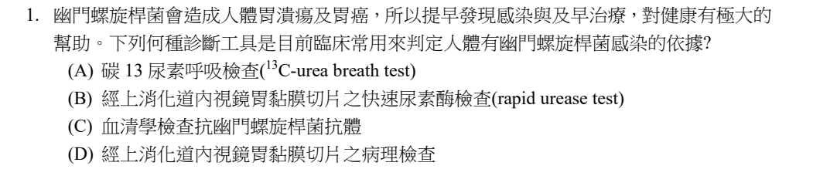
官方採計：A 原答案：A
維持原答案A
主分類：Ch27 Bacteria and Archaea
27.6 / Pathogenic Bacteria
目錄行1774；條目起始印刷頁588；實際目錄 PDF42
次分類：Ch02 The Chemical Context of Life
2.2 / Isotopes
目錄行110；條目起始印刷頁31；實際目錄 PDF35
主分類理由：題目判斷致病細菌幽門螺旋桿菌感染的診斷，27.6 Pathogenic Bacteria 是病原與疾病的直接目錄條目。
次分類理由：2.2 Isotopes 補充碳13示蹤原理；不把臨床感染診斷整題改歸原子結構。
科學說明：官方A並於釋疑PDF8維持。尿素酶分解標記尿素後可檢出呼出標記CO2；碳13是穩定同位素，不是放射性碳14。原題只問常用依據，B、D胃鏡切片檢查亦可診斷，C抗體可反映既往感染而不必代表現症；釋疑以非侵入、較快選A，但題幹未明列這些限定。依官方採計，科學上不宣稱其他三法全無用途。
來源涵蓋範圍：Campbell支援所列分類框架；具名機制或科學界線由列示原始研究/官方來源補足。
教材正文：印刷588／PDF637、印刷584／PDF633、印刷31／PDF80
補充來源：S01
另行比較：2.2同位素應否取代27.6病原診斷；A是否唯一可用檢驗。
本地588病原細菌與31同位素分別支援臨床主題和示蹤次題；官方釋疑的快速非侵入限定未寫入原題，仍按A採計並保留其他方法用途。確認27.6主、2.2次。
結論：證據確認，分類疑義已解決。完整覆核紀錄
Q02 · 42.6 / How a Mammal Breathes 正式分類
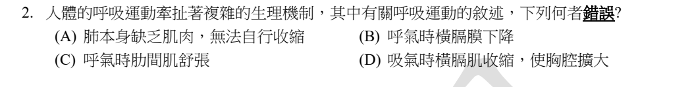
原卷PDF2 · 官方原答案PDF4 · 已核對生物釋疑PDF8下半部–14
官方採計：B 原答案：B
未列於已取得111生物釋疑PDF8下半部–14；依同年度原答案PDF4採計
主分類：Ch42 Circulation and Gas Exchange
42.6 / How a Mammal Breathes
目錄行2840；條目起始印刷頁945；實際目錄 PDF46
主分類理由：42.6 How a Mammal Breathes 直接解釋橫膈收縮、胸腔容積與負壓呼吸。
次分類理由：四選項皆屬通氣機制，沒有需另列的最小次條目。
科學說明：官方B。正常安靜吸氣橫膈收縮下降；安靜呼氣放鬆回升，主要靠彈性回縮。C以安靜呼吸為背景；用力呼氣會募集肌群。A「肺本身缺乏肌肉」是指肺不能靠自身骨骼肌主動通氣的簡化，不能推成呼吸道完全沒有平滑肌。
來源涵蓋範圍：Campbell正文支援分類原理；原題與官方釋疑的假設、資料及措辭限制另見科學說明。
教材正文：印刷945／PDF994、印刷946／PDF995
補充來源：不需另加課本外具名機制來源
另行比較：呼吸調控神經回饋與橫膈機械通氣何者主導。
945–946描述負壓通氣及橫膈方向，B錯誤不需依靠神經反射知識；保留安靜與用力呼氣適用範圍，確認42.6的哺乳類呼吸條目。
結論：證據確認，分類疑義已解決。完整覆核紀錄
Q03 · 27.1 / Cell-Surface Structures 正式分類
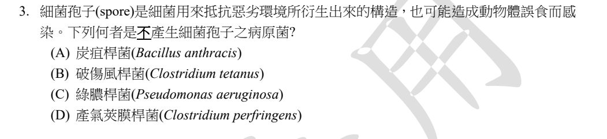
原卷PDF2 · 官方原答案PDF4 · 已核對生物釋疑PDF8下半部–14
官方採計：C 原答案：C
未列於已取得111生物釋疑PDF8下半部–14；依同年度原答案PDF4採計
主分類：Ch27 Bacteria and Archaea
27.1 / Cell-Surface Structures
目錄行1709；條目起始印刷頁574；實際目錄 PDF42
次分類：Ch27 Bacteria and Archaea
27.4 / Bacteria
目錄行1751；條目起始印刷頁583；實際目錄 PDF42
主分類理由：27.1 Cell-Surface Structures 的正文575直接討論抵抗惡劣環境的內生孢子，優先於一般繁殖條目。
次分類理由：27.4 Bacteria 比較選項所列細菌類群；同章次條目保留，章統計去重。
科學說明：官方C。Pseudomonas aeruginosa 不形成內生孢子；Bacillus anthracis、Clostridium tetanus 與 C. perfringens 是典型產孢菌。本題的spore是耐受構造，不是藉孢子增加細菌數量的生殖。Campbell供構造框架，Pseudomonas具名性狀另由加拿大公衛署資料核對。
來源涵蓋範圍：Campbell支援所列分類框架；具名機制或科學界線由列示原始研究/官方來源補足。
教材正文：印刷574／PDF623、印刷575／PDF624、印刷584／PDF633
補充來源：S26
另行比較：一般繁殖Reproduction和Cell-Surface Structures的最小條目邊界。
重新定位575內生孢子段，實際位於細胞表面構造脈絡；584類群及公衛署非產孢資料核實Pseudomonas，改採1709主、1751次，不把內生孢子作繁殖方式。
結論：證據確認，分類疑義已解決。完整覆核紀錄
Q04 · 43.3 / Helper T Cells: Activating Adaptive Immunity 正式分類
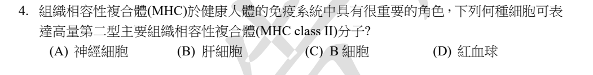
原卷PDF2 · 官方原答案PDF4 · 已核對生物釋疑PDF8下半部–14
官方採計：C 原答案：C
未列於已取得111生物釋疑PDF8下半部–14；依同年度原答案PDF4採計
主分類：Ch43 The Immune System
43.3 / Helper T Cells: Activating Adaptive Immunity
目錄行2896；條目起始印刷頁963；實際目錄 PDF47
次分類：Ch43 The Immune System
43.2 / Antigen Recognition by T Cells
目錄行2886；條目起始印刷頁959；實際目錄 PDF47
主分類理由：43.3 Helper T Cells: Activating Adaptive Immunity 明列抗原呈現細胞經MHC II活化輔助T細胞，含B細胞。
次分類理由：43.2 Antigen Recognition by T Cells 補充MHC與T受體的配對，不混同B受體直接結合抗原。
科學說明：官方C。正常B細胞屬專業抗原呈現細胞，可高量表現MHC II；神經、肝與成熟紅血球不符合題設正常高量表現者。此處是B細胞呈現抗原，不是B細胞受體只能辨識MHC結合抗原。
來源涵蓋範圍：Campbell正文支援分類原理；原題與官方釋疑的假設、資料及措辭限制另見科學說明。
教材正文：印刷959／PDF1008、印刷963／PDF1012、印刷964／PDF1013
補充來源：不需另加課本外具名機制來源
另行比較：B細胞抗原辨識與B細胞抗原呈現混淆。
963–964的MHC II呈現與959 T細胞辨識互補；題問表現MHC II的細胞，C符合，不用B受體直接結合條目替代呈現機制。
結論：證據確認，分類疑義已解決。完整覆核紀錄
Q05 · 43.3 / B Cells and Antibodies: A Response to Extracellular Pathogens 正式分類
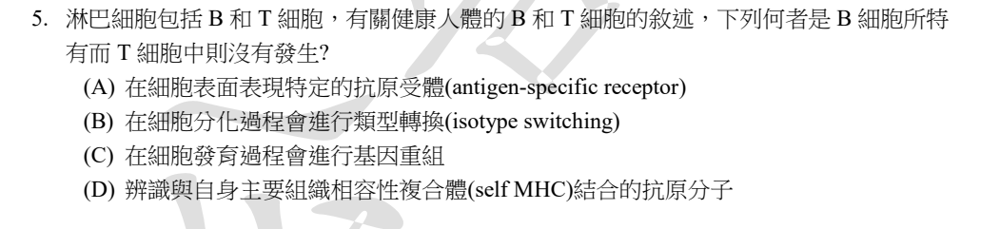
原卷PDF2 · 官方原答案PDF4 · 已核對生物釋疑PDF8下半部–14
官方採計：B 原答案：B
未列於已取得111生物釋疑PDF8下半部–14；依同年度原答案PDF4採計
主分類：Ch43 The Immune System
43.3 / B Cells and Antibodies: A Response to Extracellular Pathogens
目錄行2899；條目起始印刷頁964；實際目錄 PDF47
次分類：Ch43 The Immune System
43.2 / B Cell and T Cell Development
目錄行2889；條目起始印刷頁960；實際目錄 PDF47
主分類理由：43.3 B Cells and Antibodies: A Response to Extracellular Pathogens 說明抗體類別及重鏈恆定區，是isotype switching結果的直接條目。
次分類理由：43.2 B Cell and T Cell Development 比較兩類淋巴球均有受體基因片段重組，排除把所有重組當B專有。
科學說明：官方B。類型轉換改變免疫球蛋白重鏈恆定區及效應功能，保留原抗原特異性；B、T均有特定受體與發育時V(D)J重組。T細胞辨識胜肽–MHC，B受體通常直接結合抗原。Campbell966列抗體類別；AID與類型轉換機制由TFH研究補足，不能將IgM/IgD共表現一律當成類型轉換。
來源涵蓋範圍：Campbell支援所列分類框架；具名機制或科學界線由列示原始研究/官方來源補足。
教材正文：印刷964／PDF1013、印刷965／PDF1014、印刷966／PDF1015、印刷960／PDF1009、印刷961／PDF1010
補充來源：S06
另行比較：類型轉換是否與B/T均有V(D)J重組混為一事。
966區分抗體重鏈恆定區、960–961說明兩類受體多樣化，TFH研究補足AID；維持B並保留43.2發育次條目，未宣稱T細胞可切換抗體類別。
結論：證據確認，分類疑義已解決。完整覆核紀錄
Q06 · 19.2 / General Features of Viral Replicative Cycles 正式分類
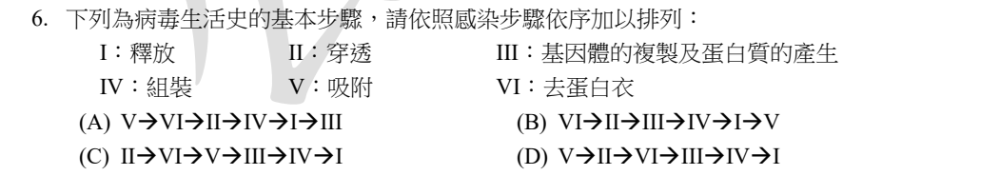
原卷PDF2 · 官方原答案PDF4 · 已核對生物釋疑PDF8下半部–14
官方採計：D 原答案：D
未列於已取得111生物釋疑PDF8下半部–14；依同年度原答案PDF4採計
主分類：Ch19 Viruses
19.2 / General Features of Viral Replicative Cycles
目錄行1196；條目起始印刷頁401；實際目錄 PDF40
次分類：Ch19 Viruses
19.2 / Replicative Cycles of Animal Viruses
目錄行1202；條目起始印刷頁404；實際目錄 PDF40
主分類理由：19.2 General Features of Viral Replicative Cycles 直接涵蓋吸附、進入、脫殼、合成、組裝與釋放的總流程。
次分類理由：19.2 Replicative Cycles of Animal Viruses 補充圖示脫殼與出芽；同章另留具體病毒生活史條目。
科學說明：官方D，順序V→II→VI→III→IV→I。這是可脫殼病毒感染的基本教學模型；病毒類型可在進入、脫殼及釋放方式上不同，不聲稱所有病毒都以完全相同細節循環。
來源涵蓋範圍：Campbell正文支援分類原理；原題與官方釋疑的假設、資料及措辭限制另見科學說明。
教材正文：印刷401／PDF450、印刷404／PDF453、印刷405／PDF454
補充來源：不需另加課本外具名機制來源
另行比較：19.2動物病毒流程或一般生活史何者更直接。
題幹問基本六步，401一般循環為主，404–405動物病毒細節為次；逐一核對V、II、VI、III、IV、I與官方D相符。
結論：證據確認，分類疑義已解決。完整覆核紀錄
Q07 · 41.5 / Regulation of Energy Storage 正式分類
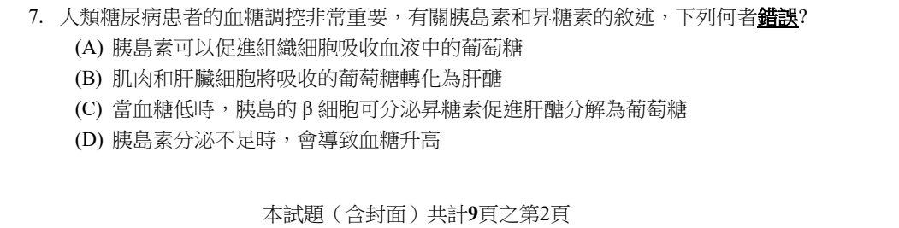
原卷PDF2 · 官方原答案PDF4 · 已核對生物釋疑PDF8下半部–14
官方採計：C 原答案：C
未列於已取得111生物釋疑PDF8下半部–14；依同年度原答案PDF4採計
主分類：Ch41 Animal Nutrition
41.5 / Regulation of Energy Storage
目錄行2743；條目起始印刷頁915；實際目錄 PDF46
主分類理由：41.5 Regulation of Energy Storage 的印刷916及圖41.23直接呈現胰島素、昇糖素與血糖回饋，是真實最小目錄。
次分類理由：題目焦點是能量儲存與血糖，該條目已完整涵蓋；不僅因荷爾蒙名稱重複列45章。
科學說明：官方C。低血糖刺激胰島α細胞分泌昇糖素；β細胞分泌胰島素。胰島素促進葡萄糖利用與儲存，昇糖素促進肝臟釋糖；並非所有組織葡萄糖攝取都依賴胰島素。
來源涵蓋範圍：Campbell正文支援分類原理；原題與官方釋疑的假設、資料及措辭限制另見科學說明。
教材正文：印刷915／PDF964、印刷916／PDF965、印刷917／PDF966
補充來源：不需另加課本外具名機制來源
另行比較：僅因胰島荷爾蒙而列45章是否優於41.5。
另實看TOC PDF46與正文PDF965／印刷916，41.5 Regulation of Energy Storage直接含α／β細胞及血糖圖，確定2743，不採不存在的2744條目。
結論：證據確認，分類疑義已解決。完整覆核紀錄
Q08 · 19.2 / General Features of Viral Replicative Cycles 正式分類
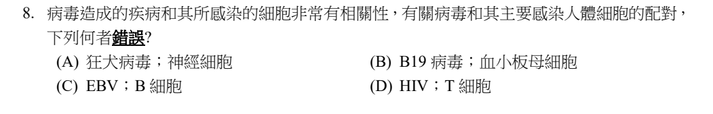
官方採計：B 原答案：B
維持原答案B
主分類：Ch19 Viruses
19.2 / General Features of Viral Replicative Cycles
目錄行1196；條目起始印刷頁401；實際目錄 PDF40
主分類理由：19.2 General Features of Viral Replicative Cycles 的宿主範圍及細胞受體條件直接對應病毒細胞嗜性。
次分類理由：四配對皆為病毒宿主細胞選擇；不把錯選項血小板母細胞另列造血章。
科學說明：官方B，釋疑PDF9維持。B19主要支持生產性感染的是紅系前驅細胞；狂犬神經、EBV B細胞、HIV以CD4 T細胞為主要教學配對，但不等於各病毒只感染一種細胞。MB-02研究在Epo誘導5–10日的紅系分化狀態支持B19複製，不能因細胞株原始名稱推成血小板母細胞嗜性；釋疑「三天以上」較原研究寬鬆。
來源涵蓋範圍：Campbell支援所列分類框架；具名機制或科學界線由列示原始研究/官方來源補足。
教材正文：印刷401／PDF450
補充來源：S02
另行比較：MB-02細胞株名稱能否推翻B19主要紅系嗜性。
釋疑PDF9及MB-02原研究分化條件相互核對，5–10日Epo誘導的紅系狀態支持複製，不能等同血小板母細胞；主歸19.2宿主範圍，B維持。
結論：證據確認，分類疑義已解決。完整覆核紀錄
Q09 · 43.3 / Immunization 正式分類
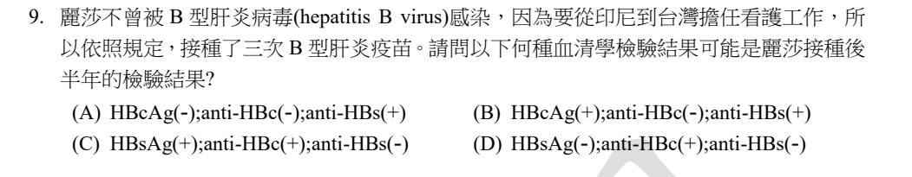
原卷PDF3 · 官方原答案PDF4 · 已核對生物釋疑PDF8下半部–14
官方採計：A 原答案：A
未列於已取得111生物釋疑PDF8下半部–14；依同年度原答案PDF4採計
主分類：Ch43 The Immune System
43.3 / Immunization
目錄行2908；條目起始印刷頁968；實際目錄 PDF47
次分類：Ch43 The Immune System
43.3 / Active and Passive Immunity
目錄行2911；條目起始印刷頁968；實際目錄 PDF47
主分類理由：43.3 Immunization 直接說明接種抗原產生主動免疫與抗體，是疫苗後血清判讀的核心。
次分類理由：43.3 Active and Passive Immunity 區分接種者自己產生抗體與外來抗體，並支援半年後的免疫背景。
科學說明：官方A。單純疫苗誘發anti-HBs，不產生anti-HBc；CDC標準疫苗免疫組合是HBsAg陰、anti-HBc陰、anti-HBs陽。原題A、B實際印成HBcAg，不是HBsAg，保留原文與差異，不偷偷改字。題設三劑為既定情境，不把題文移工接種規定當作已查核的現行法規。
來源涵蓋範圍：Campbell支援所列分類框架；具名機制或科學界線由列示原始研究/官方來源補足。
教材正文：印刷968／PDF1017、印刷969／PDF1018
補充來源：S03
另行比較：原圖HBcAg能否默默換成CDC檢驗欄HBsAg。
重看原卷PDF3確認A與B印HBcAg；將原文保存，另列CDC標準HBsAg／anti-HBc／anti-HBs三項組合，疫苗免疫主歸43.3，官方A不變。
結論：證據確認，分類疑義已解決。完整覆核紀錄
Q10 · 19.1 / Structure of Viruses 正式分類
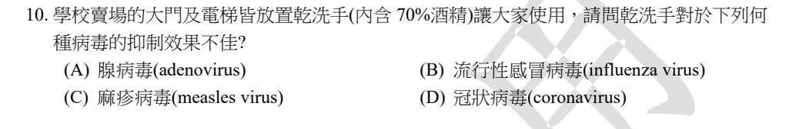
原卷PDF3 · 官方原答案PDF4 · 已核對生物釋疑PDF8下半部–14
官方採計：A 原答案：A
未列於已取得111生物釋疑PDF8下半部–14；依同年度原答案PDF4採計
主分類：Ch19 Viruses
19.1 / Structure of Viruses
目錄行1189；條目起始印刷頁399；實際目錄 PDF40
次分類：Ch19 Viruses
19.3 / Viral Diseases in Animals
目錄行1212；條目起始印刷頁408；實際目錄 PDF40
主分類理由：19.1 Structure of Viruses 區分腺病毒無套膜與其餘選項套膜結構，提供酒精敏感度比較的框架。
次分類理由：19.3 Viral Diseases in Animals 補充病毒感染控制背景，具體消毒效力另列官方來源。
科學說明：官方A。無套膜腺病毒相對較難以一般酒精乾洗手控制；實際效力取決於酒精種類、濃度、接觸時間與病毒型別。CDC指出70%異丙醇對腺病毒無效，另載適當條件下60–80%乙醇可使腺病毒失活，故不把原題未指定的「70%酒精」擴張成所有乙醇製劑必然無效，也不以表面消毒試驗等同實際洗手效果。
來源涵蓋範圍：Campbell支援所列分類框架；具名機制或科學界線由列示原始研究/官方來源補足。
教材正文：印刷399／PDF448、印刷400／PDF449、印刷408／PDF457、印刷409／PDF458
補充來源：S04
另行比較：無套膜是否能證明所有70%酒精均對腺病毒無效。
399–400結構比較及CDC分別對乙醇、異丙醇的說明已消除過度推論；19.1結構為主，19.3疾病防治為次，官方A僅按題目相對比較。
結論：證據確認，分類疑義已解決。完整覆核紀錄
Q11 · 49.3 / Information Processing 正式分類
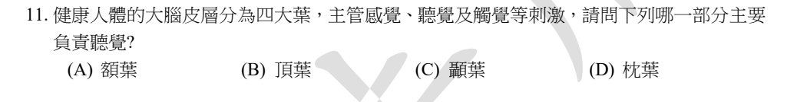
原卷PDF3 · 官方原答案PDF4 · 已核對生物釋疑PDF8下半部–14
官方採計：C 原答案：C
未列於已取得111生物釋疑PDF8下半部–14；依同年度原答案PDF4採計
主分類：Ch49 Nervous Systems
49.3 / Information Processing
目錄行3271；條目起始印刷頁1097；實際目錄 PDF48
主分類理由：49.3 Information Processing 及圖49.16在印刷1097定位顳葉聽覺皮質，直接回答腦葉功能。
次分類理由：題目沒有耳部受器或聲波轉導過程，不另掛50章感覺接收。
科學說明：官方C。聽覺皮質主要位於顳葉；枕葉主要視覺、頂葉主要體感、額葉主要運動與高階功能。已實看教材圖49.16標記，不僅由關鍵字推論。
來源涵蓋範圍：Campbell正文支援分類原理；原題與官方釋疑的假設、資料及措辭限制另見科學說明。
教材正文：印刷1096／PDF1145、印刷1097／PDF1146、印刷1098／PDF1147
補充來源：不需另加課本外具名機制來源
另行比較：聽覺皮質定位應列49章或50章耳部轉導。
實看教材圖49.16，Temporal lobe與Auditory cortex位置明確；題目無耳蝸轉導機制，確認49.3 Information Processing而不以50章替代。
結論：證據確認，分類疑義已解決。完整覆核紀錄
Q12 · 43.1 / Innate Immunity of Vertebrates 正式分類
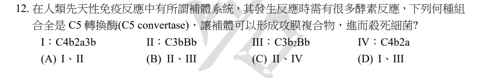
原卷PDF3 · 官方原答案PDF4 · 已核對生物釋疑PDF8下半部–14
官方採計：D 原答案：D
未列於已取得111生物釋疑PDF8下半部–14；依同年度原答案PDF4採計
主分類：Ch43 The Immune System
43.1 / Innate Immunity of Vertebrates
目錄行2870；條目起始印刷頁954；實際目錄 PDF47
次分類：Ch43 The Immune System
43.3 / B Cells and Antibodies: A Response to Extracellular Pathogens
目錄行2899；條目起始印刷頁964；實際目錄 PDF47
主分類理由：43.1 Innate Immunity of Vertebrates 列補體級聯與膜攻擊，是題目先天免疫系統的主要目錄。
次分類理由：43.3 B Cells and Antibodies: A Response to Extracellular Pathogens 補充抗體啟動補體及成孔，連接經典途徑。
科學說明：官方D，I C4b2a3b及III C3b2Bb為兩種C5轉換酶；II C3bBb及IV C4b2a是C3轉換酶。C5被切割產生C5b後參與終端膜攻擊複合物。Campbell沒有完整列出兩套複合物配方，配方另以經典與替代途徑原始研究核對；C3b2Bb也可表作C3bBb3b。
來源涵蓋範圍：Campbell支援所列分類框架；具名機制或科學界線由列示原始研究/官方來源補足。
教材正文：印刷955／PDF1004、印刷956／PDF1005、印刷965／PDF1014、印刷966／PDF1015
補充來源：S05
另行比較：C3與C5轉換酶組成及C3b2Bb記法。
重看原圖羅馬數字及下標，經典C4b2a3b、替代C3b2Bb是I、III，與官方D一致；補體先天反應為主，抗體啟動補體為次，配方不冒稱全載於Campbell。
結論：證據確認，分類疑義已解決。完整覆核紀錄
Q13 · 7.4 / The Need for Energy in Active Transport 正式分類
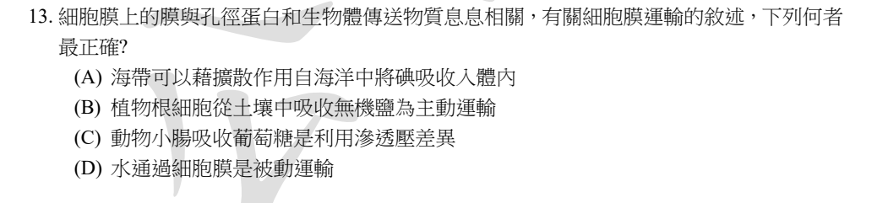
官方採計：B或D 原答案：B
原B，官方更正為B或D
主分類：Ch07 Membrane Structure and Function
7.4 / The Need for Energy in Active Transport
目錄行450；條目起始印刷頁136；實際目錄 PDF36
次分類：Ch07 Membrane Structure and Function
7.3 / Facilitated Diffusion: Passive Transport Aided by Proteins
目錄行443；條目起始印刷頁135；實際目錄 PDF36
次分類：Ch07 Membrane Structure and Function
7.3 / Effects of Osmosis on Water Balance
目錄行440；條目起始印刷頁133；實際目錄 PDF36
主分類理由：7.4 The Need for Energy in Active Transport 處理原答案B根細胞離子逆梯度運輸，且與其他選項比較能源需求。
次分類理由：7.3 Facilitated Diffusion: Passive Transport Aided by Proteins 及 Effects of Osmosis on Water Balance 直接支援正式另採D水的被動運輸，兩個真實次條目均保存。
科學說明：原答案B；111釋疑PDF9更正為B或D，兩者任選其一皆採計。D水的滲透及經水通道移動不直接耗ATP；B指根部建立離子梯度的主動吸收，並非每一種離子的每一步均直接水解ATP。小腸葡萄糖常藉Na+共運輸，不是滲透壓驅動溶質；海帶濃縮碘不能只用順梯度擴散說明。
來源涵蓋範圍：Campbell正文支援分類原理；原題與官方釋疑的假設、資料及措辭限制另見科學說明。
教材正文：印刷132／PDF181、印刷133／PDF182、印刷134／PDF183、印刷135／PDF184、印刷136／PDF185、印刷137／PDF186、印刷138／PDF187
補充來源：不需另加課本外具名機制來源
另行比較：只沿用原B是否漏掉官方更正D；主動與被動條目是否都保留。
原圖PDF3及釋疑PDF9確認B或D皆給分；132–138分辨離子主動吸收、水滲透及共運輸。正式採計雙答案，7.4主動為主並保存7.3兩個最小次條目，沒有刪除D來降低歧義。
結論：證據確認，分類疑義已解決。完整覆核紀錄
Q14 · 28.1 / Structural and Functional Diversity in Protists 正式分類
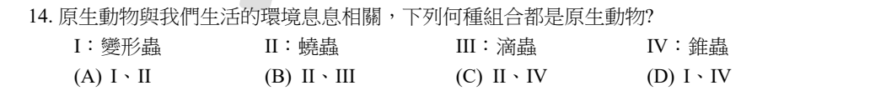
原卷PDF3 · 官方原答案PDF4 · 已核對生物釋疑PDF8下半部–14
官方採計：D 原答案：D
未列於已取得111生物釋疑PDF8下半部–14；依同年度原答案PDF4採計
主分類：Ch28 Protists
28.1 / Structural and Functional Diversity in Protists
目錄行1791；條目起始印刷頁594；實際目錄 PDF42
次分類：Ch28 Protists
28.5 / Amoebozoans
目錄行1837；條目起始印刷頁612；實際目錄 PDF42
次分類：Ch28 Protists
28.2 / Euglenozoans
目錄行1807；條目起始印刷頁600；實際目錄 PDF42
次分類：Ch28 Protists
28.2 / Diplomonads and Parabasalids
目錄行1804；條目起始印刷頁600；實際目錄 PDF42
主分類理由：28.1 Structural and Functional Diversity in Protists 處理原生生物的廣泛多樣性，避免把傳統「原生動物」當單系群。
次分類理由：28.6 Amoebozoans、28.2 Euglenozoans 與 Diplomonads and Parabasalids 分別對應變形蟲、錐蟲與滴蟲，保留同章各最小條目。
科學說明：官方D I、IV。I變形蟲、III滴蟲、IV錐蟲皆屬傳統所稱原生動物，II蟯蟲為多細胞線蟲；提供的四個成對選項中只有I、IV不含II。不能因答案D未列III就寫成滴蟲不是原生動物。
來源涵蓋範圍：Campbell正文支援分類原理；原題與官方釋疑的假設、資料及措辭限制另見科學說明。
教材正文：印刷594／PDF643、印刷597／PDF646、印刷600／PDF649、印刷601／PDF650、印刷612／PDF661
補充來源：不需另加課本外具名機制來源
另行比較：D未包含III是否代表滴蟲不是原生動物。
597、600–601、612分別確認滴蟲、錐蟲、變形蟲；四個提供配對中僅D不含線蟲II，保留三個類群次條目，不從答案反推III為假。
結論：證據確認，分類疑義已解決。完整覆核紀錄
Q15 · 27.6 / Pathogenic Bacteria 正式分類
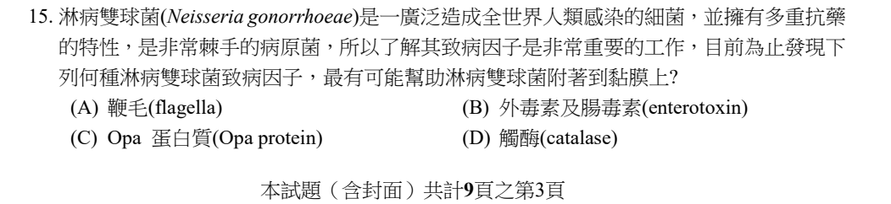
原卷PDF3 · 官方原答案PDF4 · 已核對生物釋疑PDF8下半部–14
官方採計：C 原答案：C
未列於已取得111生物釋疑PDF8下半部–14；依同年度原答案PDF4採計
主分類：Ch27 Bacteria and Archaea
27.6 / Pathogenic Bacteria
目錄行1774；條目起始印刷頁588；實際目錄 PDF42
次分類：Ch27 Bacteria and Archaea
27.1 / Cell-Surface Structures
目錄行1709；條目起始印刷頁574；實際目錄 PDF42
主分類理由：27.6 Pathogenic Bacteria 的致病與宿主互作是淋病雙球菌黏膜附著題的主軸。
次分類理由：27.1 Cell-Surface Structures 補充表面附著構造的功能；Opa的具名蛋白機制由原始研究支援。
科學說明：官方C。Opa是外膜黏附相關蛋白，部分Opa與宿主CEACAM受器互作，有助附著及侵入；它不是鞭毛、觸酶、毒素，也不能直接改叫菌毛。淋菌菌毛亦參與附著，但不是本題四個選項中的Opa同義物。
來源涵蓋範圍：Campbell支援所列分類框架；具名機制或科學界線由列示原始研究/官方來源補足。
教材正文：印刷588／PDF637、印刷574／PDF623、印刷575／PDF624
補充來源：S07
另行比較：Opa是否可直接等同教材的菌毛。
575表面附著僅作功能框架，原始淋菌研究支援Opa／CEACAM；敘明Opa外膜蛋白與菌毛不同，27.6主、27.1次證據範圍清楚。
結論：證據確認，分類疑義已解決。完整覆核紀錄
Q16 · 15.4 / Human Conditions Due to Chromosomal Alterations 正式分類
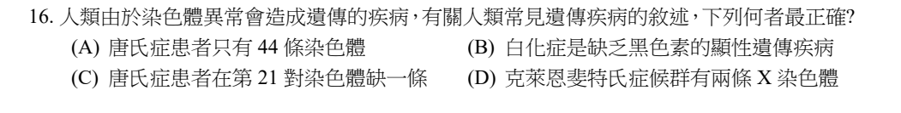
原卷PDF4 · 官方原答案PDF4 · 已核對生物釋疑PDF8下半部–14
官方採計：D 原答案：D
未列於已取得111生物釋疑PDF8下半部–14；依同年度原答案PDF4採計
主分類：Ch15 The Chromosomal Basis of Inheritance
15.4 / Human Conditions Due to Chromosomal Alterations
目錄行974；條目起始印刷頁308；實際目錄 PDF39
主分類理由：15.4 Human Conditions Due to Chromosomal Alterations 直接含XXY克萊恩斐特及21三體，對應染色體異常辨識。
次分類理由：白化症僅是錯誤敘述的干擾選項，未另列孟德爾遺傳條目。
科學說明：官方D。典型Klinefelter為47,XXY，含兩條X及一條Y；典型唐氏症是21三體、47條，不是44條或少一條21。常見白化症型態多為隱性，不能概括為顯性。
來源涵蓋範圍：Campbell正文支援分類原理；原題與官方釋疑的假設、資料及措辭限制另見科學說明。
教材正文：印刷308／PDF357、印刷309／PDF358
補充來源：不需另加課本外具名機制來源
另行比較：兩條X是否被誤讀成只有46,XX；典型與全部核型界線。
308–309核型說明支持典型47,XXY；答案D不排除額外Y，唐氏21三體與白化症干擾項也核對，分類15.4確定。
結論：證據確認，分類疑義已解決。完整覆核紀錄
Q17 · 46.5 / Conception, Embryonic Development, and Birth 正式分類
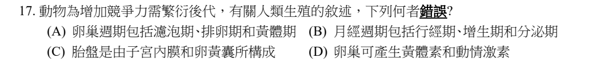
原卷PDF4 · 官方原答案PDF4 · 已核對生物釋疑PDF8下半部–14
官方採計：C 原答案：C
未列於已取得111生物釋疑PDF8下半部–14；依同年度原答案PDF4採計
主分類：Ch46 Animal Reproduction
46.5 / Conception, Embryonic Development, and Birth
目錄行3114；條目起始印刷頁1034；實際目錄 PDF48
次分類：Ch46 Animal Reproduction
46.4 / Hormonal Control of Female Reproductive Cycles
目錄行3104；條目起始印刷頁1032；實際目錄 PDF48
主分類理由：46.5 Conception, Embryonic Development, and Birth 的胎盤來源直接解決錯誤選項C。
次分類理由：46.4 Hormonal Control of Female Reproductive Cycles 比較卵巢週期、子宮週期與卵巢荷爾蒙，實際支援A、B、D的判讀。
科學說明：官方C。胎盤由胎兒絨毛膜組織及母體子宮內膜部分構成，卵黃囊不是與子宮內膜組成胎盤的胎兒部分。卵巢濾泡期／排卵／黃體期與子宮行經／增生／分泌期是不同層面的分期。
來源涵蓋範圍：Campbell正文支援分類原理；原題與官方釋疑的假設、資料及措辭限制另見科學說明。
教材正文：印刷1032／PDF1081、印刷1033／PDF1082、印刷1034／PDF1083、印刷1035／PDF1084、印刷1036／PDF1085
補充來源：不需另加課本外具名機制來源
另行比較：卵黃囊、絨毛膜與子宮週期是否混合來源。
1034–1036確認胎兒絨毛膜與母體內膜，1032–1033週期分期另列次；原C錯誤明確，46.5胎盤發育優先於46.4週期。
結論：證據確認，分類疑義已解決。完整覆核紀錄
Q18 · 43.3 / Helper T Cells: Activating Adaptive Immunity 正式分類
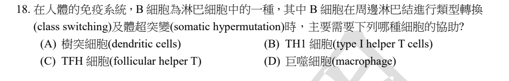
官方採計：C 原答案：C
維持原答案C
主分類：Ch43 The Immune System
43.3 / Helper T Cells: Activating Adaptive Immunity
目錄行2896；條目起始印刷頁963；實際目錄 PDF47
次分類：Ch43 The Immune System
43.3 / B Cells and Antibodies: A Response to Extracellular Pathogens
目錄行2899；條目起始印刷頁964；實際目錄 PDF47
主分類理由：43.3 Helper T Cells: Activating Adaptive Immunity 是協助B細胞反應的最近目錄，TFH具名亞群由補充研究細化。
次分類理由：43.3 B Cells and Antibodies: A Response to Extracellular Pathogens 保留類型轉換、抗體效應及B細胞反應結果。
科學說明：官方C，釋疑PDF9維持。TFH藉CD40L與細胞激素支援生發中心B細胞反應；AID參與類型轉換與體細胞高突變，親和力成熟含突變與後續選擇。釋疑將親和力成熟寫成造成突變的單向原因過度簡化；濾泡樹突細胞與一般樹突細胞也不能混為一種。TFH不等同Th1。
來源涵蓋範圍：Campbell支援所列分類框架；具名機制或科學界線由列示原始研究/官方來源補足。
教材正文：印刷963／PDF1012、印刷964／PDF1013、印刷965／PDF1014、印刷966／PDF1015
補充來源：S06
另行比較：TFH與Th1、樹突細胞是否混同；SHM與親和力成熟方向。
963–966加TFH原始研究支持C，記錄AID突變及選擇共同造成成熟，不照抄釋疑簡化因果；43.3輔助T與B反應兩個條目分別保存。
結論：證據確認，分類疑義已解決。完整覆核紀錄
Q19 · 2.3 / Weak Chemical Interactions 正式分類
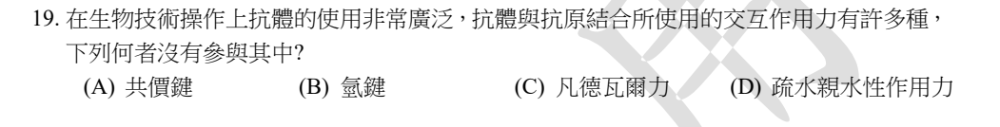
原卷PDF4 · 官方原答案PDF4 · 已核對生物釋疑PDF8下半部–14
官方採計：A 原答案：A
未列於已取得111生物釋疑PDF8下半部–14；依同年度原答案PDF4採計
主分類：Ch02 The Chemical Context of Life
2.3 / Weak Chemical Interactions
目錄行132；條目起始印刷頁38；實際目錄 PDF35
次分類：Ch43 The Immune System
43.2 / Antigen Recognition by B Cells and Antibodies
目錄行2883；條目起始印刷頁958；實際目錄 PDF47
次分類：Ch05 The Structure and Function of Large Biological Molecules
5.4 / Protein Structure and Function
目錄行268；條目起始印刷頁78；實際目錄 PDF36
主分類理由：2.3 Weak Chemical Interactions 直接比較抗原–抗體界面的非共價作用與共價鍵，符合問「何者沒有參與」的鑑別。
次分類理由：43.2 Antigen Recognition by B Cells and Antibodies 給出抗原結合位點；5.4 Protein Structure and Function 補充蛋白質立體互補與內部穩定作用。
科學說明：官方A。一般抗原–抗體特異結合由多種非共價作用協同，包括氫鍵、凡德瓦爾力及疏水效應；抗體本體含共價胜肽鍵及雙硫鍵，與本題問的抗原結合界面不同。題文「疏水親水性作用力」屬概括措辭，不能等同新的一種化學鍵。
來源涵蓋範圍：Campbell正文支援分類原理；原題與官方釋疑的假設、資料及措辭限制另見科學說明。
教材正文：印刷38／PDF87、印刷39／PDF88、印刷81／PDF130、印刷958／PDF1007、印刷959／PDF1008
補充來源：不需另加課本外具名機制來源
另行比較：抗體內部共價鍵是否等同抗原結合界面鍵。
38–39弱相互作用、81蛋白質結構與958–959抗原位點分開核對；本題問結合界面排除A，化學作用力主2.3，免疫辨識與蛋白結構為次。
結論：證據確認，分類疑義已解決。完整覆核紀錄
Q20 · 27.4 / Bacteria 正式分類
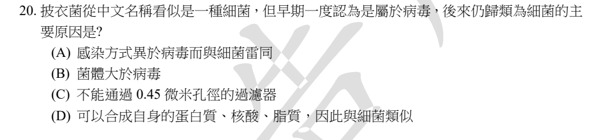
官方採計：D 原答案：D
維持原答案D
主分類：Ch27 Bacteria and Archaea
27.4 / Bacteria
目錄行1751；條目起始印刷頁583；實際目錄 PDF42
次分類：Ch27 Bacteria and Archaea
27.1 / Internal Organization and DNA
目錄行1715；條目起始印刷頁577；實際目錄 PDF42
次分類：Ch19 Viruses
19.2 / General Features of Viral Replicative Cycles
目錄行1196；條目起始印刷頁401；實際目錄 PDF40
主分類理由：27.4 Bacteria 直接把Chlamydia納為細菌且記載其胞內寄生性，支援分類界線。
次分類理由：27.1 Internal Organization and DNA 支援細菌核糖體與基因組；19.2 General Features of Viral Replicative Cycles 比較病毒仰賴宿主的蛋白質製造。
科學說明：官方D，釋疑PDF10維持。披衣菌有細胞結構、核糖體與自身合成路徑，雖為專性胞內寄生者仍是細菌；研究支持其膜形成需要自身磷脂合成。這不表示可完全脫離宿主生長，也不表示每一種脂質都自行取得；某些病毒可編碼核酸聚合酶，不能把「病毒無自身核糖體翻譯」誤寫為病毒完全沒有核酸合成能力。尺寸與濾膜不是可靠域級界線。
來源涵蓋範圍：Campbell支援所列分類框架；具名機制或科學界線由列示原始研究/官方來源補足。
教材正文：印刷584／PDF633、印刷401／PDF450、印刷577／PDF626
補充來源：S08
另行比較：專性胞內寄生能否直接歸成病毒；自主脂質合成是否等於自由生活。
584細菌類群、577核糖體、401病毒依賴及磷脂原始研究共同確認細菌分類；官方D保留，但不把能合成部分物質擴大為無宿主即可生長。
結論：證據確認，分類疑義已解決。完整覆核紀錄
Q21 · 27.4 / Bacteria 正式分類
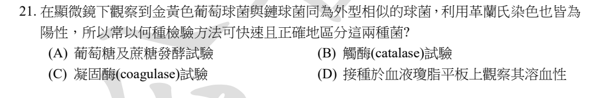
官方採計：B 原答案：B
維持原答案B
主分類：Ch27 Bacteria and Archaea
27.4 / Bacteria
目錄行1751；條目起始印刷頁583；實際目錄 PDF42
次分類：Ch27 Bacteria and Archaea
27.1 / Cell-Surface Structures
目錄行1709；條目起始印刷頁574；實際目錄 PDF42
主分類理由：27.4 Bacteria 對照葡萄球菌與鏈球菌類群，核心是細菌表型鑑別。
次分類理由：27.1 Cell-Surface Structures 說明兩者Gram陽性外形為何不足以區分；檢驗步驟由ASM官方教材補足。
科學說明：官方B，釋疑PDF10維持。觸酶試驗迅速辨別常見葡萄球菌陽性與鏈球菌陰性。原題點名金黃色葡萄球菌，因此凝固酶也可能提供鑑別資訊；官方以屬級常用、簡單快速的第一步選B，不能將C概括說成對S. aureus完全沒有鑑別力。
來源涵蓋範圍：Campbell支援所列分類框架；具名機制或科學界線由列示原始研究/官方來源補足。
教材正文：印刷574／PDF623、印刷575／PDF624、印刷584／PDF633
補充來源：S09
另行比較：S. aureus具名是否使coagulase完全不適用的說法失真。
ASM觸酶實驗支持B為快速常用屬級分辨；原題點名金葡菌，故保留凝固酶的物種辨識價值。分類27.4細菌表型確定，非以「C毫無用途」消除疑義。
結論：證據確認，分類疑義已解決。完整覆核紀錄
Q22 · 27.6 / Antibiotic Resistance 正式分類
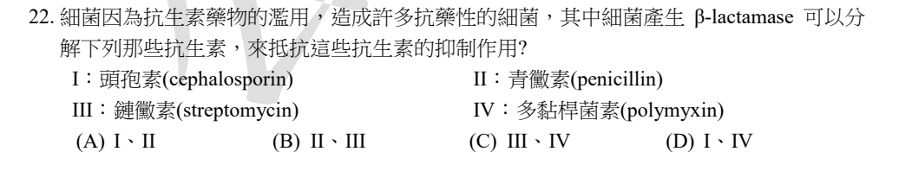
原卷PDF4 · 官方原答案PDF4 · 已核對生物釋疑PDF8下半部–14
官方採計：A 原答案：A
未列於已取得111生物釋疑PDF8下半部–14；依同年度原答案PDF4採計
主分類：Ch27 Bacteria and Archaea
27.6 / Antibiotic Resistance
目錄行1777；條目起始印刷頁588；實際目錄 PDF42
次分類：Ch27 Bacteria and Archaea
27.1 / Cell-Surface Structures
目錄行1709；條目起始印刷頁574；實際目錄 PDF42
主分類理由：27.6 Antibiotic Resistance 直接討論抗生素失效及抗藥性，是β-lactamase效應的最小目錄。
次分類理由：27.1 Cell-Surface Structures 的肽聚糖與青黴素作用對應β-lactam類抗生素的共同背景。
科學說明：官方A I、II。β-lactamase水解β-lactam環；青黴素及頭孢菌素屬此類，鏈黴素為胺基糖苷、多黏桿菌素為多肽類。不同β-lactamase的受質範圍不一，不表示任一種酶都能同樣分解所有頭孢菌素。
來源涵蓋範圍：Campbell支援所列分類框架；具名機制或科學界線由列示原始研究/官方來源補足。
教材正文：印刷574／PDF623、印刷575／PDF624、印刷588／PDF637、印刷589／PDF638
補充來源：S10
另行比較：所有β-lactamase是否均能分解每一種頭孢菌素。
574–575細胞壁與588–589抗藥性配合CDC環水解定義，I／II屬β-lactam，仍保留酶受質範圍差異；主條目抗藥性比一般細胞壁更切題。
結論：證據確認，分類疑義已解決。完整覆核紀錄
Q23 · 53.5 / Mechanisms of Density-Dependent Population Regulation 正式分類
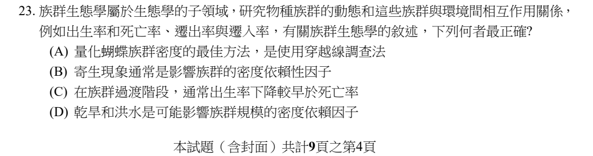
官方採計：B 原答案：B
維持原答案B
主分類：Ch53 Population Ecology
53.5 / Mechanisms of Density-Dependent Population Regulation
目錄行3574；條目起始印刷頁1203；實際目錄 PDF49
次分類：Ch53 Population Ecology
53.1 / Density and Dispersion
目錄行3531；條目起始印刷頁1191；實際目錄 PDF49
次分類：Ch53 Population Ecology
53.6 / The Global Human Population
目錄行3584；條目起始印刷頁1207；實際目錄 PDF50
主分類理由：53.5 Mechanisms of Density-Dependent Population Regulation 直接處理寄生與疾病隨密度影響族群，對應答案B。
次分類理由：53.1 Density and Dispersion 處理蝴蝶數量估計方法；53.6 The Global Human Population（正文的Demographic Transition） 比較死亡率及出生率下降先後。
科學說明：官方B，釋疑PDF10維持。寄生通常為密度依賴因子；人口轉型一般死亡率先下降，乾旱洪水常作密度非依賴例子。穿越線可估計蝴蝶相對豐度，配合偵測率也可作密度估計；標記再捕亦需封閉及捕捉機率假設。原題「最佳」過強，釋疑把穿越線只限生物多樣性也過窄，保留方法界線而不改官方B。
來源涵蓋範圍：Campbell支援所列分類框架；具名機制或科學界線由列示原始研究/官方來源補足。
教材正文：印刷1191／PDF1240、印刷1192／PDF1241、印刷1202／PDF1251、印刷1203／PDF1252、印刷1204／PDF1253、印刷1207／PDF1256、印刷1208／PDF1257
補充來源：S11
另行比較：釋疑排除transect是否可擴成不能估計蝴蝶豐度。
1191–1192抽樣假設與蝴蝶研究顯示方法各有條件；1202–1204及1207–1208確認密度依賴與人口轉型。保留官方B及釋疑方法界線，不改寫原題「最佳」。
結論：證據確認，分類疑義已解決。完整覆核紀錄
Q24 · 19.2 / Replicative Cycles of Animal Viruses 正式分類
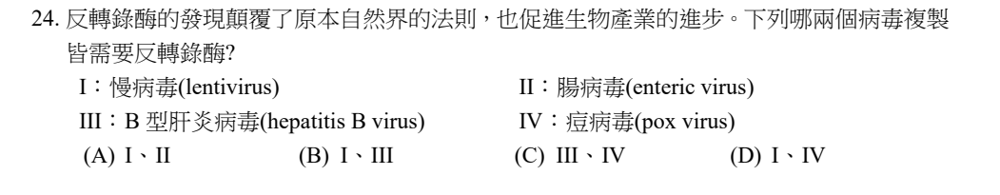
官方採計：B 原答案：B
維持原答案B
主分類：Ch19 Viruses
19.2 / Replicative Cycles of Animal Viruses
目錄行1202；條目起始印刷頁404；實際目錄 PDF40
主分類理由：19.2 Replicative Cycles of Animal Viruses 直接比較RNA反轉錄病毒及DNA病毒複製路徑。
次分類理由：兩個正解均屬同一最小條目的病毒基因組複製，無必要重列一般遺傳資訊流。
科學說明：官方B I、III，釋疑PDF11維持。慢病毒為反轉錄病毒；HBV雖為DNA病毒，利用pgRNA中間體反轉錄製造DNA，不能將HBV改列成Retroviridae。題文中文「腸病毒」與英文enteric virus並不完全同範圍，依選項預期的腸病毒群比較；不是所有腸道感染病毒的正式分類名稱。
來源涵蓋範圍：Campbell支援所列分類框架；具名機制或科學界線由列示原始研究/官方來源補足。
教材正文：印刷404／PDF453、印刷405／PDF454、印刷406／PDF455
補充來源：S12
另行比較：DNA病毒HBV需RT是否矛盾；enteric與Enterovirus是否可互換。
ICTV記載pgRNA反轉錄；404–406提供動物病毒複製框架。I、III為官方B，未把HBV列入反轉錄病毒科，亦保留題文中文／英文範圍不同。
結論：證據確認，分類疑義已解決。完整覆核紀錄
Q25 · 19.3 / Prions: Proteins as Infectious Agents 正式分類
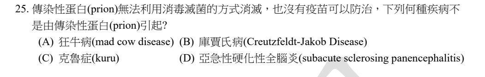
原卷PDF5 · 官方原答案PDF4 · 已核對生物釋疑PDF8下半部–14
官方採計：D 原答案：D
未列於已取得111生物釋疑PDF8下半部–14；依同年度原答案PDF4採計
主分類：Ch19 Viruses
19.3 / Prions: Proteins as Infectious Agents
目錄行1221；條目起始印刷頁412；實際目錄 PDF40
次分類：Ch19 Viruses
19.3 / Viral Diseases in Animals
目錄行1212；條目起始印刷頁408；實際目錄 PDF40
主分類理由：19.3 Prions: Proteins as Infectious Agents 直接定義prion及其相關神經退化疾病。
次分類理由：19.3 Viral Diseases in Animals 連接SSPE為麻疹病毒持續感染後果的反例。
科學說明：官方D。SSPE與麻疹病毒持續感染有關；狂牛病、CJD與kuru屬prion疾病。原題「無法利用消毒滅菌方式消滅」過度絕對，CDC有專門prion去污處理規範，不能把抗一般處理等同任何方法皆無效。此處僅記錄科學差異，不提供操作處方。
來源涵蓋範圍：Campbell支援所列分類框架；具名機制或科學界線由列示原始研究/官方來源補足。
教材正文：印刷412／PDF461、印刷413／PDF462、印刷408／PDF457
補充來源：S13
另行比較：把耐一般消毒寫成任何滅菌皆不可能是否合理。
412–413prion與CDC SSPE病例區分蛋白感染和麻疹病毒後果，CDC存在prion專用去污規範；正式D不變，19.3兩個最小條目完整。
結論：證據確認，分類疑義已解決。完整覆核紀錄
Q26 · 19.3 / Viral Diseases in Animals 正式分類
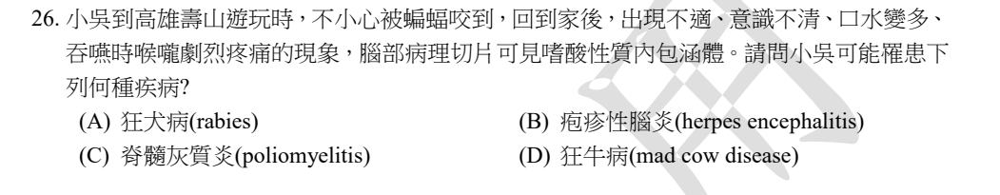
原卷PDF5 · 官方原答案PDF4 · 已核對生物釋疑PDF8下半部–14
官方採計：A 原答案：A
未列於已取得111生物釋疑PDF8下半部–14；依同年度原答案PDF4採計
主分類：Ch19 Viruses
19.3 / Viral Diseases in Animals
目錄行1212；條目起始印刷頁408；實際目錄 PDF40
主分類理由：19.3 Viral Diseases in Animals 依病原與感染症表現辨識狂犬病，並非考一般神經傳導。
次分類理由：症候與Negri小體是辨識病原線索，未另擴列神經系統章作主要學習目標。
科學說明：官方A。蝙蝠暴露、吞嚥痙攣及流涎、腦炎與神經細胞胞質嗜酸性Negri包涵體支持狂犬病。Campbell供動物病毒疾病框架，臨床與病理辨識由CDC補足。原文「回到家後」未給潛伏期，不能解讀成此次咬傷同日必然引起症狀；一般潛伏數週至數月。
來源涵蓋範圍：Campbell支援所列分類框架；具名機制或科學界線由列示原始研究/官方來源補足。
教材正文：印刷405／PDF454、印刷408／PDF457
補充來源：S14
另行比較：神經病理線索是否應使主分類跳到神經系統。
CDC把蝙蝠、吞嚥症狀及Negri小體連結狂犬病毒，題目目標為病原辨識；19.3動物病毒疾病為主，潛伏期不由「回家後」推成當天。
結論：證據確認，分類疑義已解決。完整覆核紀錄
Q27 · 14.3 / Extending Mendelian Genetics for a Single Gene 正式分類
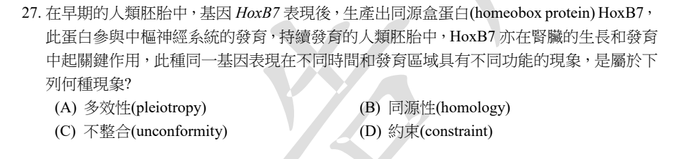
原卷PDF5 · 官方原答案PDF4 · 已核對生物釋疑PDF8下半部–14
官方採計：A 原答案：A
未列於已取得111生物釋疑PDF8下半部–14；依同年度原答案PDF4採計
主分類：Ch14 Mendel and the Gene Idea
14.3 / Extending Mendelian Genetics for a Single Gene
目錄行892；條目起始印刷頁278；實際目錄 PDF38
次分類：Ch21 Genomes and Their Evolution
21.6 / Widespread Conservation of Developmental Genes Among Animals
目錄行1362；條目起始印刷頁463；實際目錄 PDF40
主分類理由：14.3 Extending Mendelian Genetics for a Single Gene 包含正文的pleiotropy，一基因影響多種性狀最直接對應題意。
次分類理由：21.6 Widespread Conservation of Developmental Genes Among Animals 補充Hox與homeobox的發育調控背景。
科學說明：官方A。依題設，同一基因對中樞神經及腎發育有多種作用，屬多效性，不是多基因共同控制單一性狀。HoxB7的人類具體例證在本輪未獨立證明每一功能；小鼠Hox腎發育圖譜只作有限背景，不冒充人類臨床功能證明，更不使用名稱相似但實為Msx1的Hox-7論文。分類可由題設明確的原理判定。
來源涵蓋範圍：Campbell支援所列分類框架；具名機制或科學界線由列示原始研究/官方來源補足。
教材正文：印刷280／PDF329、印刷281／PDF330、印刷463／PDF512、印刷464／PDF513
補充來源：S15
另行比較：Hox發育基因與孟德爾多效性哪個是所問原理。
280–281一基因多性狀最直接，463–464 Hox僅具名背景；小鼠圖譜不當成人類全部功能驗證，不混入Hox-7／Msx1，14.3主、21.6次確定。
結論：證據確認，分類疑義已解決。完整覆核紀錄
Q28 · 34.4 / Derived Characters of Tetrapods 正式分類
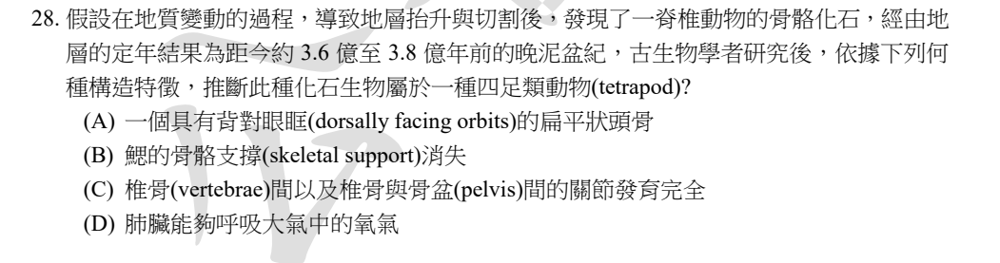
原卷PDF5 · 官方原答案PDF4 · 已核對生物釋疑PDF8下半部–14
官方採計：C 原答案：C
未列於已取得111生物釋疑PDF8下半部–14；依同年度原答案PDF4採計
主分類：Ch34 The Origin and Evolution of Vertebrates
34.4 / Derived Characters of Tetrapods
目錄行2199；條目起始印刷頁730；實際目錄 PDF44
次分類：Ch34 The Origin and Evolution of Vertebrates
34.4 / The Origin of Tetrapods
目錄行2202；條目起始印刷頁731；實際目錄 PDF44
主分類理由：34.4 Derived Characters of Tetrapods 直接討論四足類支持軀幹與骨盆連接，對應答案C的形態證據。
次分類理由：34.4 The Origin of Tetrapods 以泥盆紀過渡化石說明性狀逐步取得，限制單一特徵的排他性。
科學說明：官方C。相較扁頭、背向眼眶及肺，椎骨／骨盆連接是題目支持承重的最佳線索；早期四足類並非一律失去鰓的骨骼支持。教材以具指四肢等整套性狀定義四足類；2024 Tiktaalik研究指出近親也已有部分薦部專化，因此不把C當不受過渡化石限制的唯一絕對診斷，且骨骼不能直接證實肺的生理功能。
來源涵蓋範圍：Campbell支援所列分類框架；具名機制或科學界線由列示原始研究/官方來源補足。
教材正文：印刷730／PDF779、印刷731／PDF780、印刷732／PDF781
補充來源：S16
另行比較：單一骨盆連接是否為所有過渡化石的排他性診斷。
730–732及2024 Tiktaalik軸骨研究支持承重演化的連續性；C仍為題目最佳線索，保留具指四肢等整體診斷及化石軟組織限制，34.4主次無疑義。
結論：證據確認，分類疑義已解決。完整覆核紀錄
Q29 · 14.3 / Nature and Nurture: The Environmental Impact on Phenotype 正式分類
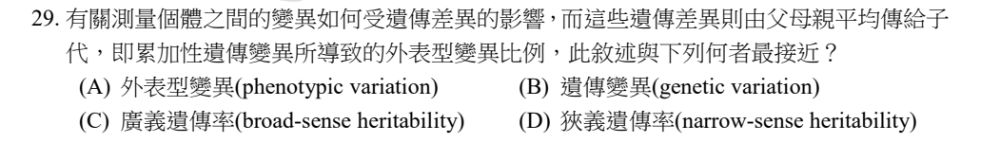
原卷PDF5 · 官方原答案PDF4 · 已核對生物釋疑PDF8下半部–14
官方採計：D 原答案：D
未列於已取得111生物釋疑PDF8下半部–14；依同年度原答案PDF4採計
主分類：Ch14 Mendel and the Gene Idea
14.3 / Nature and Nurture: The Environmental Impact on Phenotype
目錄行898；條目起始印刷頁282；實際目錄 PDF38
次分類：Ch14 Mendel and the Gene Idea
14.3 / Extending Mendelian Genetics for Two or More Genes
目錄行895；條目起始印刷頁281；實際目錄 PDF38
主分類理由：14.3 Nature and Nurture: The Environmental Impact on Phenotype 比較基因與環境對表型的貢獻，是本地TOC可用的最小對應。
次分類理由：14.3 Extending Mendelian Genetics for Two or More Genes（正文的Polygenic Inheritance） 補充累加性等位基因效果；不用正文術語自行虛構TOC的「heritability」條目。
科學說明：官方D。狹義遺傳率h²=VA/VP；廣義H²=VG/VP，VG含累加、顯性與交互作用等遺傳變異。本題明指累加性比例，所以選D。這是特定族群及環境的變異比例，不是個體性狀有幾成由父母造成，也不是父母各傳一半便得到0.5遺傳率。公式由Nature教育原文補足。
來源涵蓋範圍：Campbell支援所列分類框架；具名機制或科學界線由列示原始研究/官方來源補足。
教材正文：印刷281／PDF330、印刷282／PDF331、印刷283／PDF332
補充來源：S17
另行比較：h²與H²分子、個體與族群解釋是否混淆。
281–283基因環境及累加效果，外部原文VA/VP對VG/VP，核實D；真實TOC用14.3環境與多基因條目，沒有自行創造遺傳率目錄。
結論：證據確認，分類疑義已解決。完整覆核紀錄
Q30 · 6.5 / The Evolutionary Origins of Mitochondria and Chloroplasts 正式分類
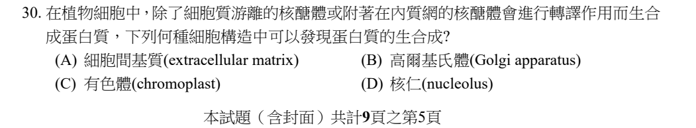
原卷PDF5 · 官方原答案PDF4 · 已核對生物釋疑PDF8下半部–14
官方採計：C 原答案：C
未列於已取得111生物釋疑PDF8下半部–14；依同年度原答案PDF4採計
主分類：Ch06 A Tour of the Cell
6.5 / The Evolutionary Origins of Mitochondria and Chloroplasts
目錄行362；條目起始印刷頁109；實際目錄 PDF36
次分類：Ch06 A Tour of the Cell
6.5 / Chloroplasts: Capture of Light Energy
目錄行368；條目起始印刷頁110；實際目錄 PDF36
主分類理由：6.5 The Evolutionary Origins of Mitochondria and Chloroplasts 說明半自主胞器保留DNA與核糖體，對應非細胞質位置的蛋白質製造。
次分類理由：6.5 Chloroplasts: Capture of Light Energy 正文延伸plastids含chromoplast，建立有色體與質體的關係。
科學說明：官方C。有色體屬質體；番茄成熟有色體原始研究顯示仍有特定轉譯活動。不能由「含質體基因組」推成每一種成熟有色體都有同等活性：水仙成熟有色體研究可見核糖體消失。Golgi與細胞外基質不是自主核糖體轉譯場所，核仁主要rRNA及核糖體次單元形成。
來源涵蓋範圍：Campbell支援所列分類框架；具名機制或科學界線由列示原始研究/官方來源補足。
教材正文：印刷109／PDF158、印刷110／PDF159、印刷111／PDF160
補充來源：S18
另行比較：有色體是否可由質體身分一律推成成熟時仍轉譯。
109–111提供起源與質體類型，番茄與水仙研究提示發育依賴差異；C代表可發生而非所有有色體必然同等活躍，6.5主次均有證據。
結論：證據確認，分類疑義已解決。完整覆核紀錄
Q31 · 13.2 / The Variety of Sexual Life Cycles 正式分類
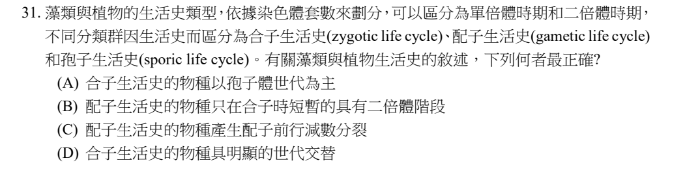
官方採計：C 原答案：C
維持原答案C
主分類：Ch13 Meiosis and Sexual Life Cycles
13.2 / The Variety of Sexual Life Cycles
目錄行830；條目起始印刷頁258；實際目錄 PDF38
主分類理由：13.2 The Variety of Sexual Life Cycles 比較減數分裂所在階段與單／雙倍體生活史，直接解決配子生活史。
次分類理由：三生活史已在同一條目中比較，不因題目寫藻類便重複加入多個分類群條目。
科學說明：官方C，釋疑PDF12維持。gametic meiosis由雙倍體直接產生單倍體配子；zygotic meiosis的雙倍體階段主要為合子，sporic meiosis有多細胞孢子體及配子體交替。釋疑把gametic的雙倍體概稱「孢子體」較鬆，並非所有雙倍體個體都等同植物學孢子體。
來源涵蓋範圍：Campbell正文支援分類原理；原題與官方釋疑的假設、資料及措辭限制另見科學說明。
教材正文：印刷258／PDF307、印刷259／PDF308
補充來源：不需另加課本外具名機制來源
另行比較：配子生活史是否被錯當成雙世代交替；2n是否一定稱孢子體。
258–259三種生活史與釋疑對讀，C符合gametic meiosis；釋疑鬆用孢子體的用語原樣保留但分析修正，13.2 life cycles最直接。
結論：證據確認，分類疑義已解決。完整覆核紀錄
Q32 · 23.3 / Natural Selection 正式分類
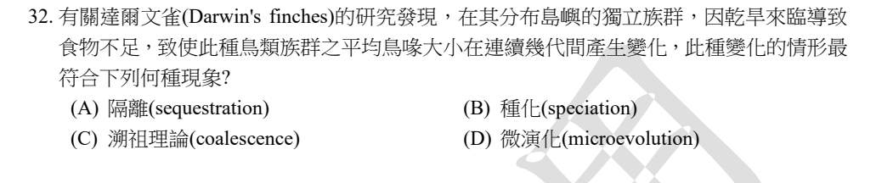
原卷PDF6 · 官方原答案PDF4 · 已核對生物釋疑PDF8下半部–14
官方採計：D 原答案：D
未列於已取得111生物釋疑PDF8下半部–14；依同年度原答案PDF4採計
主分類：Ch23 The Evolution of Populations
23.3 / Natural Selection
目錄行1452；條目起始印刷頁494；實際目錄 PDF41
次分類：Ch23 The Evolution of Populations
23.4 / Natural Selection: A Closer Look
目錄行1465；條目起始印刷頁497；實際目錄 PDF41
主分類理由：23.3 Natural Selection 解釋乾旱造成不同鳥喙個體存活與繁殖差異，直接對應數代族群改變。
次分類理由：23.4 Natural Selection: A Closer Look 保留方向性選擇與適應效果；印刷487的達爾文雀實例輔助確認微演化。
科學說明：官方D。題目是同一族群連續世代平均喙形與等位基因頻率的變化，不表示每一隻鳥在乾旱時主動把喙變大，也沒有足夠資訊判定已形成生殖隔離或新種。
來源涵蓋範圍：Campbell正文支援分類原理；原題與官方釋疑的假設、資料及措辭限制另見科學說明。
教材正文：印刷486／PDF535、印刷487／PDF536、印刷493／PDF542、印刷494／PDF543、印刷497／PDF546、印刷498／PDF547
補充來源：不需另加課本外具名機制來源
另行比較：族群喙形改變能否直接證明已種化。
新讀487完整達爾文雀乾旱段落，遺傳性喙形頻率跨代改變即microevolution；未有生殖隔離證據，23.3天擇主、23.4方向性效果次，D確定。
結論：證據確認，分類疑義已解決。完整覆核紀錄
Q33 · 35.3 / Primary Growth of Roots 正式分類
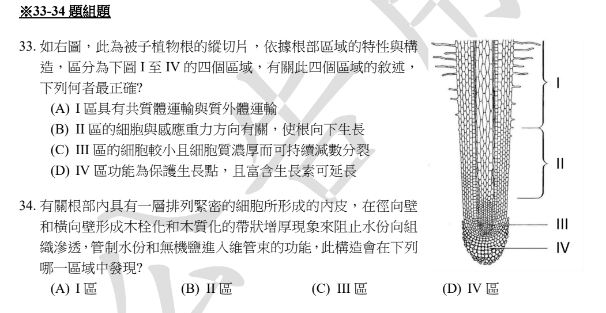
原卷PDF6 · 官方原答案PDF4 · 已核對生物釋疑PDF8下半部–14
官方採計：A 原答案：A
未列於已取得111生物釋疑PDF8下半部–14；依同年度原答案PDF4採計
主分類：Ch35 Vascular Plant Structure, Growth, and Development
35.3 / Primary Growth of Roots
目錄行2300；條目起始印刷頁768；實際目錄 PDF44
次分類：Ch36 Resource Acquisition and Transport in Vascular Plants
36.2 / The Apoplast and Symplast: Transport Continuums
目錄行2359；條目起始印刷頁787；實際目錄 PDF45
主分類理由：35.3 Primary Growth of Roots 對照完整題組圖的成熟、伸長、分裂與根冠四區，是圖像判讀的主要條目。
次分類理由：36.2 The Apoplast and Symplast: Transport Continuums 直接支援正解I區的質外體及共質體路徑。
科學說明：官方A。原圖I成熟分化區、II伸長區、III分裂區、IV根冠。成熟區可有兩種運輸路徑；重力感受主要涉及根冠，分生組織行有絲分裂而非減數分裂，根冠保護生長點而非主要細胞伸長區。Q33、34各自圖檔均保留整個共用圖和兩題，不切掉右側標記。
來源涵蓋範圍：Campbell正文支援分類原理；原題與官方釋疑的假設、資料及措辭限制另見科學說明。
教材正文：印刷768／PDF817、印刷769／PDF818、印刷787／PDF836、印刷788／PDF837
補充來源：不需另加課本外具名機制來源
另行比較：原圖I–IV區域、分裂類型與共用右圖是否完整。
教材768根縱切圖和787–788兩路徑確認I成熟／II伸長／III有絲分裂／IV根冠；題組裁圖留兩題與全圖，35.3主、36.2次，A確定。
結論：證據確認，分類疑義已解決。完整覆核紀錄
Q34 · 36.3 / Transport of Water and Minerals into the Xylem 正式分類

原卷PDF6 · 官方原答案PDF4 · 已核對生物釋疑PDF8下半部–14
官方採計：A 原答案：A
未列於已取得111生物釋疑PDF8下半部–14；依同年度原答案PDF4採計
主分類：Ch36 Resource Acquisition and Transport in Vascular Plants
36.3 / Transport of Water and Minerals into the Xylem
目錄行2378；條目起始印刷頁792；實際目錄 PDF45
次分類：Ch35 Vascular Plant Structure, Growth, and Development
35.3 / Primary Growth of Roots
目錄行2300；條目起始印刷頁768；實際目錄 PDF44
主分類理由：36.3 Transport of Water and Minerals into the Xylem 直接說明內皮層Casparian strip限制質外體路徑並管制維管束進入。
次分類理由：35.3 Primary Growth of Roots 對照題組I為分化區，定位結構出現區域。
科學說明：官方A I區。卡氏帶限制沿細胞壁繞過選擇性膜的水與溶質移動，不是完全阻止根吸水。教材792用suberin解釋；Arabidopsis原始研究指出初生卡氏帶以lignin構成，與稍後suberin lamellae須區別，原題木栓化／木質化並列的寬泛敘述照存。
來源涵蓋範圍：Campbell支援所列分類框架；具名機制或科學界線由列示原始研究/官方來源補足。
教材正文：印刷792／PDF841、印刷793／PDF842、印刷768／PDF817、印刷769／PDF818
補充來源：S19
另行比較：卡氏帶與晚期木栓質層是否混為同一材料及區域。
792–793內皮路徑、768–769成熟區和Arabidopsis原始研究逐項區分，I區定位不變；保留教材suberin和研究lignin範圍，主36.3、次35.3。
結論：證據確認，分類疑義已解決。完整覆核紀錄
Q35 · 6.4 / The Endoplasmic Reticulum: Biosynthetic Factory 正式分類
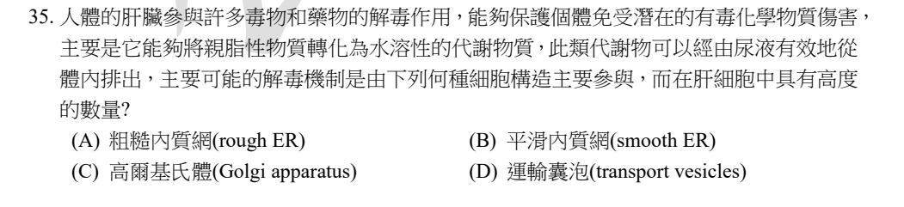
原卷PDF6 · 官方原答案PDF4 · 已核對生物釋疑PDF8下半部–14
官方採計：B 原答案：B
未列於已取得111生物釋疑PDF8下半部–14；依同年度原答案PDF4採計
主分類：Ch06 A Tour of the Cell
6.4 / The Endoplasmic Reticulum: Biosynthetic Factory
目錄行343；條目起始印刷頁104；實際目錄 PDF36
主分類理由：6.4 The Endoplasmic Reticulum: Biosynthetic Factory 的平滑ER酵素解毒段落直接描述肝細胞、增加水溶性與排除。
次分類理由：四選項是同一胞器功能比較，不另列整體消化或排泄生理章。
科學說明：官方B。平滑ER的部分酵素使脂溶性藥物更易溶於水，肝細胞可富含此系統。這是題目主要機制，並不等同肝臟所有解毒反應都只在ER，或所有代謝一定降低毒性。
來源涵蓋範圍：Campbell正文支援分類原理；原題與官方釋疑的假設、資料及措辭限制另見科學說明。
教材正文：印刷104／PDF153、印刷105／PDF154
補充來源：不需另加課本外具名機制來源
另行比較：肝臟解毒是否應以器官而非胞器功能分類。
104明載平滑ER、肝細胞及羥基增加水溶性；題幹聚焦胞器比較，6.4 ER直接完整，未把所有解毒反應概括為單一胞器。
結論：證據確認，分類疑義已解決。完整覆核紀錄
Q36 · 23.4 / Natural Selection: A Closer Look 正式分類
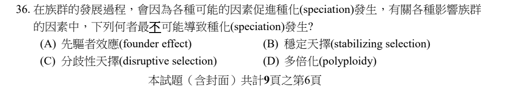
原卷PDF6 · 官方原答案PDF4 · 已核對生物釋疑PDF8下半部–14
官方採計：B 原答案：B
未列於已取得111生物釋疑PDF8下半部–14；依同年度原答案PDF4採計
主分類：Ch23 The Evolution of Populations
23.4 / Natural Selection: A Closer Look
目錄行1465；條目起始印刷頁497；實際目錄 PDF41
次分類：Ch24 The Origin of Species
24.2 / Allopatric (“Other Country”) Speciation
目錄行1498；條目起始印刷頁511；實際目錄 PDF41
次分類：Ch24 The Origin of Species
24.2 / Sympatric (“Same Country”) Speciation
目錄行1501；條目起始印刷頁513；實際目錄 PDF41
主分類理由：23.4 Natural Selection: A Closer Look 直接比較穩定與分歧天擇，穩定選擇保留中間表型而最不利於形成兩端分化。
次分類理由：24.2 Allopatric (“Other Country”) Speciation 比較小族群隔離與先驅者效應；Sympatric (“Same Country”) Speciation 處理多倍化與分歧選擇。
科學說明：官方B。多倍化可迅速造成生殖隔離，分歧選擇或隔離小族群在其他條件配合時可促進種化；穩定選擇相較之下最不可能。不能把B寫成在任何情境下絕不可能種化，也不能把先驅者效應本身當成新種已成立的證據。
來源涵蓋範圍：Campbell正文支援分類原理；原題與官方釋疑的假設、資料及措辭限制另見科學說明。
教材正文：印刷497／PDF546、印刷498／PDF547、印刷511／PDF560、印刷512／PDF561、印刷513／PDF562、印刷514／PDF563、印刷515／PDF564
補充來源：不需另加課本外具名機制來源
另行比較：選擇類型或種化途徑何者應主列；「最不可能」是否變成「絕不」。
497–498直接比較穩定／分歧天擇，511–515支援隔離與多倍化。保留相對可能性與先驅者效應非充分條件，23.4主、24.2兩次條目確認。
結論：證據確認，分類疑義已解決。完整覆核紀錄
Q37 · 6.4 / Lysosomes: Digestive Compartments 正式分類
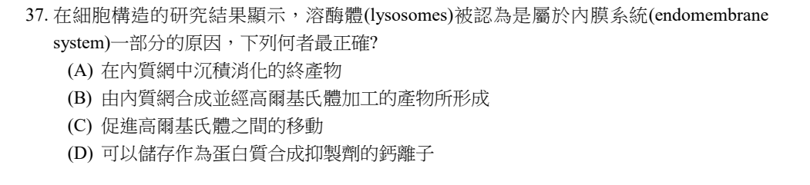
原卷PDF7 · 官方原答案PDF4 · 已核對生物釋疑PDF8下半部–14
官方採計：B 原答案：B
未列於已取得111生物釋疑PDF8下半部–14；依同年度原答案PDF4採計
主分類：Ch06 A Tour of the Cell
6.4 / Lysosomes: Digestive Compartments
目錄行349；條目起始印刷頁107；實際目錄 PDF36
次分類：Ch06 A Tour of the Cell
6.4 / The Endomembrane System: A Review
目錄行355；條目起始印刷頁108；實際目錄 PDF36
主分類理由：6.4 Lysosomes: Digestive Compartments 說明溶酶體水解酵素經ER與Golgi處理，是題目形成途徑的直接條目。
次分類理由：6.4 The Endomembrane System: A Review 保留膜與囊泡交通關係，不把內膜系統理解成所有膜始終相連。
科學說明：官方B。酵素由粗糙ER合成後經Golgi加工與分選，送入相關內膜區室形成消化系統；不是在ER堆積消化終產物，也不是以儲鈣抑制蛋白質製造為主要功能。
來源涵蓋範圍：Campbell正文支援分類原理；原題與官方釋疑的假設、資料及措辭限制另見科學說明。
教材正文：印刷107／PDF156、印刷108／PDF157、印刷109／PDF158
補充來源：不需另加課本外具名機制來源
另行比較：內膜系統是否必須連續一張膜；溶酶體輸入途徑。
107–109的溶酶體與內膜交通支持ER→Golgi來源，故6.4 Lysosomes為主、綜合內膜條目為次，不以鈣儲存或運動干擾項新增章。
結論：證據確認，分類疑義已解決。完整覆核紀錄
Q38 · 27.4 / Archaea 正式分類
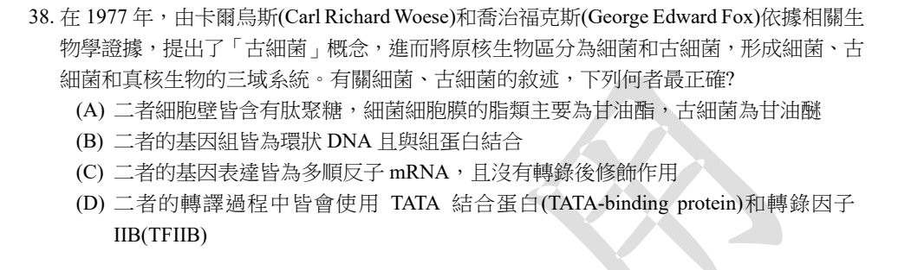
原卷PDF7 · 官方原答案PDF4 · 已核對生物釋疑PDF8下半部–14
官方採計：C 原答案：C
未列於已取得111生物釋疑PDF8下半部–14；依同年度原答案PDF4採計
主分類：Ch27 Bacteria and Archaea
27.4 / Archaea
目錄行1754；條目起始印刷頁585；實際目錄 PDF42
次分類：Ch27 Bacteria and Archaea
27.1 / Internal Organization and DNA
目錄行1715；條目起始印刷頁577；實際目錄 PDF42
次分類：Ch17 Gene Expression: From Gene to Protein
17.4 / Making Multiple Polypeptides in Bacteria and Eukaryotes
目錄行1078；條目起始印刷頁355；實際目錄 PDF39
主分類理由：27.4 Archaea 的Table27.2直接比較細菌與古菌細胞壁、膜脂、組蛋白及基因表達，為分類核心。
次分類理由：27.1 Internal Organization and DNA 保留原核基因組；17.4 Making Multiple Polypeptides in Bacteria and Eukaryotes 說明轉錄、轉譯與RNA處理差異。
科學說明：官方C照存，但C的「皆為多順反子」和「沒有轉錄後修飾」不能作普遍真命題，古菌mRNA加工已有原始研究。A古菌細胞壁無細菌式肽聚糖；B環狀基因組與組蛋白皆非兩域普遍共有；D原文是「轉譯」，TBP/TFIIB屬轉錄起始相關因子，不能偷偷改為轉錄。1977提出古菌與1990正式domains命名亦分開。因此官方採計C、科學上無一選項完全嚴謹，分類已由比較細菌古菌的證據確定。
來源涵蓋範圍：Campbell支援所列分類框架；具名機制或科學界線由列示原始研究/官方來源補足。
教材正文：印刷585／PDF634、印刷586／PDF635、印刷577／PDF626、印刷355／PDF404、印刷356／PDF405
補充來源：S20、S27
另行比較：可否把官方C改為科學完全正確，或將原D「轉譯」改成「轉錄」。
重看原卷PDF7逐字核對，C皆多順反子／無修飾與古菌mRNA加工研究不符；D確印轉譯。585–586和577、355–356確定細菌／古菌比較主27.4及基因表達次17.4，答案C與科學缺陷分欄保留。
結論：證據確認，分類疑義已解決。完整覆核紀錄
Q39 · 10.3 / A Comparison of Chemiosmosis in Chloroplasts and Mitochondria 正式分類
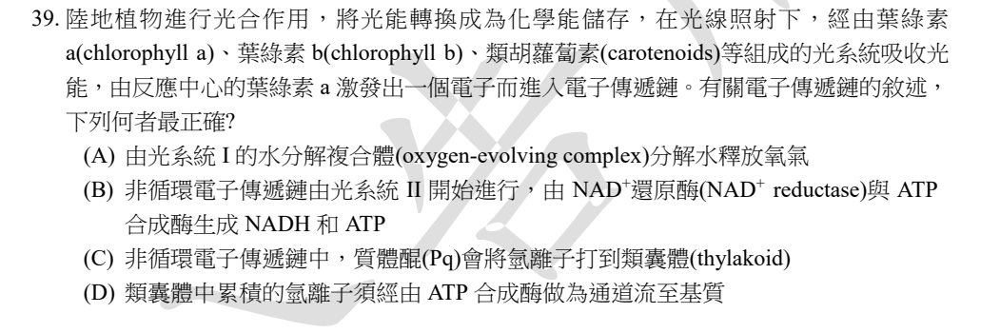
原卷PDF7 · 官方原答案PDF4 · 已核對生物釋疑PDF8下半部–14
官方採計：D 原答案：D
未列於已取得111生物釋疑PDF8下半部–14；依同年度原答案PDF4採計
主分類：Ch10 Photosynthesis
10.3 / A Comparison of Chemiosmosis in Chloroplasts and Mitochondria
目錄行662；條目起始印刷頁199；實際目錄 PDF37
次分類：Ch10 Photosynthesis
10.3 / Linear Electron Flow
目錄行656；條目起始印刷頁197；實際目錄 PDF37
主分類理由：10.2 A Comparison of Chemiosmosis in Chloroplasts and Mitochondria 直接定位H+由類囊體腔經ATP synthase回基質，對應D。
次分類理由：10.2 Linear Electron Flow 補充PSII水分解、Pq及電子傳遞到NADP+的方向。
科學說明：官方D。A水分解在PSII，不是PSI；B應為NADP+還原成NADPH，不是NAD+／NADH。Pq可攜帶質子並配合cytochrome b6f促進腔內H+累積，C以Pq單獨「打到類囊體」措辭不精準，不應反向說Pq完全不參與質子移動。D的跨膜回流方向與ATP生成明確。
來源涵蓋範圍：Campbell正文支援分類原理；原題與官方釋疑的假設、資料及措辭限制另見科學說明。
教材正文：印刷197／PDF246、印刷198／PDF247、印刷199／PDF248、印刷200／PDF249
補充來源：不需另加課本外具名機制來源
另行比較：C的Pq是否完全不帶質子；D方向是否倒置。
197–200的電子流與跨膜質子圖確認腔→基質經ATP synthase；Pq亦參與質子耦合，不能用錯誤否定C的全部功能。10.2化學滲透主、線性電子流次，D採計。
結論：證據確認，分類疑義已解決。完整覆核紀錄
Q40 · 6.4 / The Golgi Apparatus: Shipping and Receiving Center 正式分類
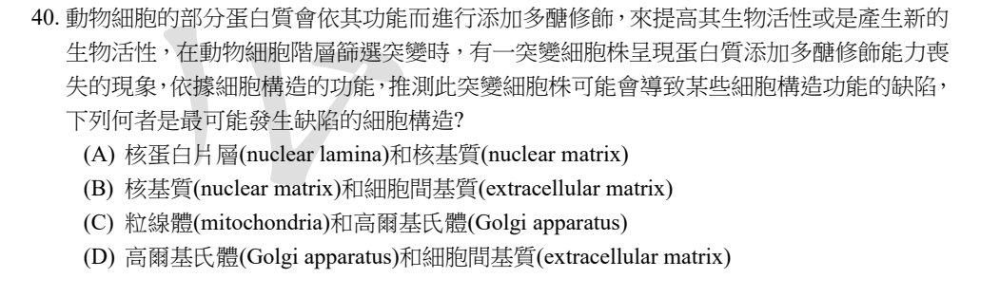
官方採計：D 原答案：D
維持原答案D
主分類：Ch06 A Tour of the Cell
6.4 / The Golgi Apparatus: Shipping and Receiving Center
目錄行346；條目起始印刷頁105；實際目錄 PDF36
次分類：Ch06 A Tour of the Cell
6.7 / The Extracellular Matrix (ECM) of Animal Cells
目錄行391；條目起始印刷頁118；實際目錄 PDF36
次分類：Ch06 A Tour of the Cell
6.4 / The Endoplasmic Reticulum: Biosynthetic Factory
目錄行343；條目起始印刷頁104；實際目錄 PDF36
主分類理由：6.4 The Golgi Apparatus: Shipping and Receiving Center 的蛋白質糖基化修飾直接對應細胞株缺陷。
次分類理由：6.7 The Extracellular Matrix (ECM) of Animal Cells 說明外部糖蛋白結構；6.4 The Endoplasmic Reticulum: Biosynthetic Factory 保留ER先行糖基化，不把全部修飾限於Golgi。
科學說明：官方D，釋疑PDF12維持。Golgi加工及糖蛋白豐富的ECM最直接受影響；ECM位於細胞外，不能改寫成胞內胞器。ER也參與糖蛋白合成起始，故不聲稱多醣修飾只在Golgi，且題目不能由單一現象直接定位唯一突變基因。
來源涵蓋範圍：Campbell正文支援分類原理；原題與官方釋疑的假設、資料及措辭限制另見科學說明。
教材正文：印刷105／PDF154、印刷106／PDF155、印刷118／PDF167、印刷119／PDF168
補充來源：不需另加課本外具名機制來源
另行比較：ECM是否被改稱胞內胞器，糖基化是否只限Golgi。
105–106及118–119分辨ER起始、Golgi加工、細胞外糖蛋白，釋疑D保留；6章三個最小主次條目均保存，章統計只計一次。
結論：證據確認，分類疑義已解決。完整覆核紀錄
Q41 · 28.4 / Green Algae 正式分類
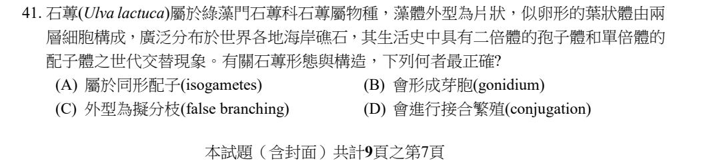
原卷PDF7 · 官方原答案PDF4 · 已核對生物釋疑PDF8下半部–14
官方採計：A 原答案：A
未列於已取得111生物釋疑PDF8下半部–14；依同年度原答案PDF4採計
主分類：Ch28 Protists
28.4 / Green Algae
目錄行1830；條目起始印刷頁610；實際目錄 PDF42
次分類：Ch13 Meiosis and Sexual Life Cycles
13.2 / The Variety of Sexual Life Cycles
目錄行830；條目起始印刷頁258；實際目錄 PDF38
主分類理由：28.5 Green Algae 包含Ulva綠藻及生活史背景，是具名藻類形態的最近目錄。
次分類理由：13.2 The Variety of Sexual Life Cycles 補充孢子體／配子體世代交替，避免和配子大小相混。
科學說明：官方A。題目採同形配子教學說法；但Melkonian1980針對Ulva lactuca的原始觀察明載slightly anisogamous，故物種層級需保留差異。配子體與孢子體同形(isomorphic)不等同兩種配子同形(isogamous)，不能用世代同形直接證明A。分類28.5綠藻不受此採計差異影響。
來源涵蓋範圍：Campbell支援所列分類框架；具名機制或科學界線由列示原始研究/官方來源補足。
教材正文：印刷610／PDF659、印刷611／PDF660、印刷258／PDF307、印刷259／PDF308
補充來源：S21
另行比較：Ulva世代同形能否證明配子同形。
重看原卷PDF7及物種名，Melkonian1980物種原始研究為稍異配；保留A官方採計和isomorphic／isogamous兩概念區隔。綠藻28.5主與生活史13.2次已確定，不假裝來源無衝突。
結論：證據確認，分類疑義已解決。完整覆核紀錄
Q42 · 17.2 / Synthesis of an RNA Transcript 正式分類
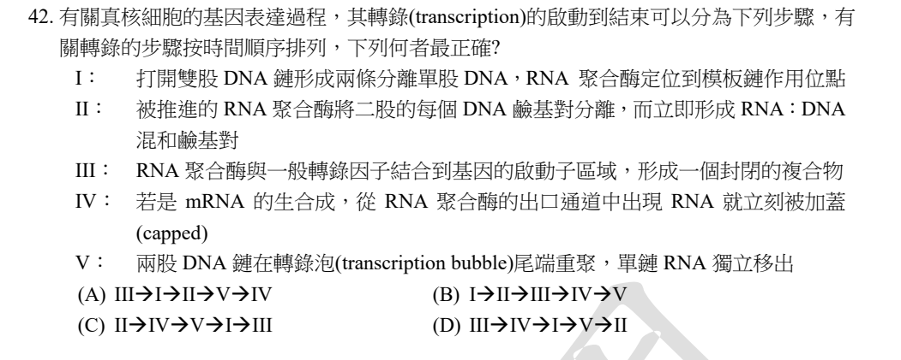
原卷PDF8 · 官方原答案PDF4 · 已核對生物釋疑PDF8下半部–14
官方採計：A 原答案：A
未列於已取得111生物釋疑PDF8下半部–14；依同年度原答案PDF4採計
主分類：Ch17 Gene Expression: From Gene to Protein
17.2 / Synthesis of an RNA Transcript
目錄行1052；條目起始印刷頁342；實際目錄 PDF39
次分類：Ch17 Gene Expression: From Gene to Protein
17.3 / Alteration of mRNA Ends
目錄行1059；條目起始印刷頁345；實際目錄 PDF39
主分類理由：17.2 Synthesis of an RNA Transcript 比較轉錄前複合體、打開DNA、延長與RNA移出，是步驟排序核心。
次分類理由：17.3 Alteration of mRNA Ends 保留5′ cap屬於mRNA加工且可與轉錄同時發生。
科學說明：官方A，III→I→II→V→IV。按新生RNA形成與出口的相依關係，先建立複合體再開放／延長，RNA從轉錄泡解離後可進行加蓋。V是轉錄泡後方DNA重新配對，不是整條RNA已轉錄終止；5′加蓋發生於轉錄早期，不應把題目線性排序教成等整條轉錄完成才加蓋。
來源涵蓋範圍：Campbell正文支援分類原理；原題與官方釋疑的假設、資料及措辭限制另見科學說明。
教材正文：印刷342／PDF391、印刷343／PDF392、印刷344／PDF393、印刷345／PDF394
補充來源：不需另加課本外具名機制來源
另行比較：V是否被誤作整條轉錄終止，導致加蓋時機錯置。
342–345轉錄泡、RNA末端加工對讀，V為局部DNA回配及RNA移出；A順序按RNA出口相依關係成立，明載加蓋可在早期轉錄中發生，17.2主、17.3次。
結論：證據確認，分類疑義已解決。完整覆核紀錄
Q43 · 18.2 / Differential Gene Expression 正式分類
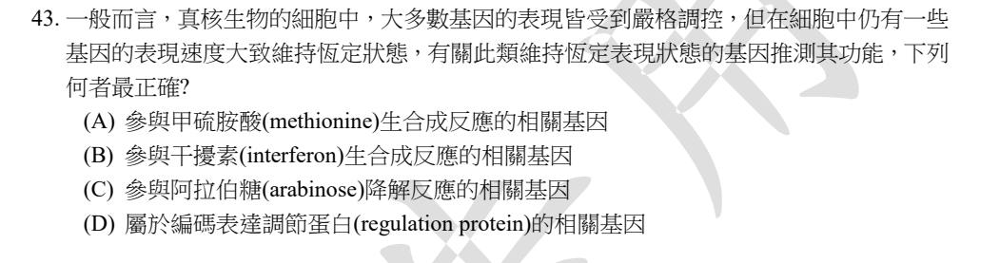
官方採計：D 原答案：D
維持原答案D
主分類：Ch18 Regulation of Gene Expression
18.2 / Differential Gene Expression
目錄行1120；條目起始印刷頁370；實際目錄 PDF39
次分類：Ch18 Regulation of Gene Expression
18.2 / Regulation of Transcription Initiation
目錄行1126；條目起始印刷頁373；實際目錄 PDF39
主分類理由：18.2 Differential Gene Expression 直接比較恆定基本功能與依條件調節的基因表達。
次分類理由：18.2 Regulation of Transcription Initiation 處理一般與特定轉錄因子，不把所有regulation protein基因都混為同樣的表達模式。
科學說明：官方D，釋疑PDF13維持。題目預期某些基本調節蛋白可有較穩定表現；「編碼調節蛋白」本身不足以保證恆定，真核調節基因也可依組織與訊號改變。釋疑引植物甲硫胺酸／SAM研究支持A可受條件影響，不能外推所有生物、所有代謝酵素或所有D類基因。保留官方選D與普遍性不足的界線；沒有重新定義為所有調節蛋白皆housekeeping。
來源涵蓋範圍：Campbell支援所列分類框架；具名機制或科學界線由列示原始研究/官方來源補足。
教材正文：印刷370／PDF419、印刷371／PDF420、印刷373／PDF422、印刷374／PDF423、印刷375／PDF424、印刷376／PDF425
補充來源：S22
另行比較：「調節蛋白」是否足以推出所有對應基因都恆定。
370–376區分housekeeping、特定因子及差異表達；Roeder2009只支援指定植物SAM相關變化，不能證明所有D。官方D和普遍性不足分開保存，分類18.2明確。
結論：證據確認，分類疑義已解決。完整覆核紀錄
Q44 · 21.5 / Duplication and Divergence of Gene-Sized Regions of DNA 正式分類
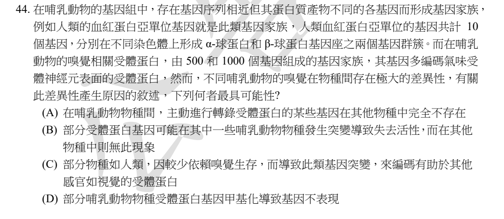
原卷PDF8 · 官方原答案PDF4 · 已核對生物釋疑PDF8下半部–14
官方採計：B 原答案：B
未列於已取得111生物釋疑PDF8下半部–14；依同年度原答案PDF4採計
主分類：Ch21 Genomes and Their Evolution
21.5 / Duplication and Divergence of Gene-Sized Regions of DNA
目錄行1346；條目起始印刷頁455；實際目錄 PDF40
次分類：Ch21 Genomes and Their Evolution
21.4 / Genes and Multigene Families
目錄行1333；條目起始印刷頁452；實際目錄 PDF40
主分類理由：21.5 Duplication and Divergence of Gene-Sized Regions of DNA 說明重複基因可分化或失去功能成為偽基因，直接對應嗅覺基因失活。
次分類理由：21.4 Genes and Multigene Families 支援球蛋白及受器家族，不把基因家族等同所有成員都具功能。
科學說明：官方B。受器基因突變失活、各物種偽基因比例差異是原始比較研究支持的機制；並非因少用嗅覺而定向突變為視覺受器。基因增減及調控也可影響嗅覺，B不是所有差異的唯一原因。原題「球蛋白10基因」及「500和1000」數量措辭照存，功能基因／偽基因計數口徑及物種範圍未明，不作全哺乳類固定數字。
來源涵蓋範圍：Campbell支援所列分類框架；具名機制或科學界線由列示原始研究/官方來源補足。
教材正文：印刷452／PDF501、印刷453／PDF502、印刷455／PDF504、印刷456／PDF505
補充來源：S23
另行比較：基因家族題應列多基因遺傳，還是重複後偽基因化。
452–456及嗅覺受器原始比較研究支持突變失活／偽基因差異，並非多基因控制一性狀的孟德爾題；21.5主、21.4次，原題不明計數口徑照存。
結論：證據確認，分類疑義已解決。完整覆核紀錄
Q45 · 27.2 / Genetic Recombination 正式分類
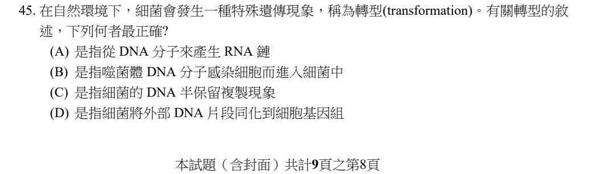
原卷PDF8 · 官方原答案PDF4 · 已核對生物釋疑PDF8下半部–14
官方採計：D 原答案：D
未列於已取得111生物釋疑PDF8下半部–14；依同年度原答案PDF4採計
主分類：Ch27 Bacteria and Archaea
27.2 / Genetic Recombination
目錄行1728；條目起始印刷頁579；實際目錄 PDF42
主分類理由：27.2 Genetic Recombination 正文含Transformation and Transduction，直接處理細菌外來DNA取得。
次分類理由：四選項比較轉型、轉錄、噬菌體媒介與複製，核心已由同一細菌基因重組條目涵蓋。
科學說明：官方D。轉型是細菌攝取環境中裸露DNA後形成遺傳改變；A為轉錄，B只描述噬菌體DNA進入，不能直接等同轉型，C為DNA複製。題目D指外來片段整合入基因組的典型情境，非宣稱每一次DNA接觸都必然整合。
來源涵蓋範圍：Campbell正文支援分類原理；原題與官方釋疑的假設、資料及措辭限制另見科學說明。
教材正文：印刷579／PDF628、印刷580／PDF629
補充來源：不需另加課本外具名機制來源
另行比較：轉型、轉導、轉錄三個同音近義術語是否混淆。
579–580裸露DNA攝取與噬菌體媒介區分清楚；D是原題預期的整合情境，27.2 Genetic Recombination為真實最小TOC，未虛構正文小標為目錄。
結論：證據確認，分類疑義已解決。完整覆核紀錄
Q46 · 24.1 / The Biological Species Concept 正式分類
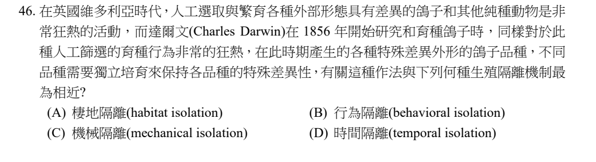
原卷PDF9 · 官方原答案PDF4 · 已核對生物釋疑PDF8下半部–14
官方採計：A 原答案：A
未列於已取得111生物釋疑PDF8下半部–14；依同年度原答案PDF4採計
主分類：Ch24 The Origin of Species
24.1 / The Biological Species Concept
目錄行1488；條目起始印刷頁507；實際目錄 PDF41
次分類：Ch22 Descent with Modification: A Darwinian View of Life
22.2 / Ideas from The Origin of Species
目錄行1399；條目起始印刷頁473；實際目錄 PDF41
主分類理由：24.1 The Biological Species Concept 下的合子前隔離比較，棲地分開使個體不易相遇，最接近題目獨立飼養。
次分類理由：22.2 Ideas from The Origin of Species 保留人工選擇的鴿種實例，區別育種篩選與自然種化。
科學說明：官方A。獨立飼養阻止不同品種交配最像棲地隔離；未提供求偶、交配器或季節差異證據。這是人為空間隔開的類比，不表示各鴿子品種已成為具有內在生殖障礙的不同物種。
來源涵蓋範圍：Campbell正文支援分類原理；原題與官方釋疑的假設、資料及措辭限制另見科學說明。
教材正文：印刷507／PDF556、印刷508／PDF557、印刷509／PDF558、印刷473／PDF522、印刷474／PDF523、印刷475／PDF524
補充來源：不需另加課本外具名機制來源
另行比較：人為分籠是否代表品種已具內在生殖隔離。
507–509棲地隔離與473–475人工選擇對照，僅按空間分開作A類比；沒有升格為不同物種，24.1主、22.2次。
結論：證據確認，分類疑義已解決。完整覆核紀錄
Q47 · 23.2 / The Hardy-Weinberg Equation 正式分類

原卷PDF9 · 官方原答案PDF4 · 已核對生物釋疑PDF8下半部–14
官方採計：C 原答案：C
未列於已取得111生物釋疑PDF8下半部–14；依同年度原答案PDF4採計
主分類：Ch23 The Evolution of Populations
23.2 / The Hardy-Weinberg Equation
目錄行1445；條目起始印刷頁490；實際目錄 PDF41
次分類：Ch14 Mendel and the Gene Idea
14.4 / Recessively Inherited Disorders
目錄行911；條目起始印刷頁285；實際目錄 PDF38
主分類理由：23.2 The Hardy-Weinberg Equation 直接用隱性同型合子發生率q²反推出p、q。
次分類理由：14.4 Recessively Inherited Disorders 保留CFTR隱性疾病與帶因者概念，但計算重點仍為族群遺傳。
科學說明：官方C。q²=81/1000000=0.000081；q=0.009，p=0.991。把罹病率直接當q會差平方根。Q47、48均保存完整題組；「多在青少年死亡」是本題假設，教材286已討論治療改善存活，不能當作現代CF個別患者的預後判斷。
來源涵蓋範圍：Campbell正文支援分類原理；原題與官方釋疑的假設、資料及措辭限制另見科學說明。
教材正文：印刷490／PDF539、印刷491／PDF540、印刷492／PDF541、印刷285／PDF334、印刷286／PDF335
補充來源：不需另加課本外具名機制來源
另行比較：罹病率與隱性等位基因率是否漏開平方根。
重新以81/1000000求q²，q=0.009，p=0.991，核對原圖選項C；題組共享保留，疾病敘述與當代預後分開。23.2主、14.4次。
結論：證據確認，分類疑義已解決。完整覆核紀錄
Q48 · 23.3 / Natural Selection 正式分類
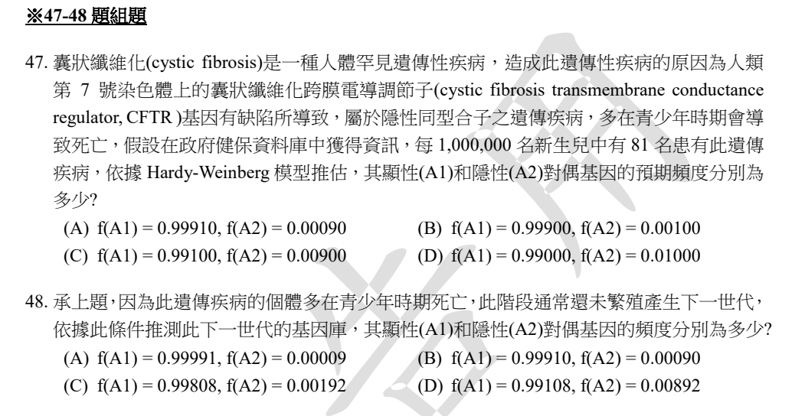
官方採計：D 原答案：D
維持原答案D
主分類：Ch23 The Evolution of Populations
23.3 / Natural Selection
目錄行1452；條目起始印刷頁494；實際目錄 PDF41
次分類：Ch23 The Evolution of Populations
23.2 / The Hardy-Weinberg Equation
目錄行1445；條目起始印刷頁490；實際目錄 PDF41
主分類理由：23.3 Natural Selection 處理隱性同型合子被選汰後下一代等位基因頻率改變，優先於靜態平衡。
次分類理由：23.2 The Hardy-Weinberg Equation 提供初始p²、2pq、q²及交配後頻率關係，保留同章最小次條目。
科學說明：官方D，釋疑PDF14維持。以aa完全不繁殖、AA與Aa適存度均1及隨機交配為考試理想化：q′=q/(1+q)=0.00891972，p′=1/(1+q)=0.99108028。初始2pq=0.017838；釋疑前文0.17838是小數位筆誤，後段算式用0.017838，兩者差異照存。原題「多」不等於全部，若有殘存繁殖須另給適存度才能精算。
來源涵蓋範圍：Campbell正文支援分類原理；原題與官方釋疑的假設、資料及措辭限制另見科學說明。
教材正文：印刷493／PDF542、印刷494／PDF543、印刷490／PDF539、印刷491／PDF540、印刷492／PDF541
補充來源：不需另加課本外具名機制來源
另行比較：釋疑0.17838與0.017838差異是否影響官方答案；選汰後有否重新正規化。
重看釋疑PDF14，前文十倍小數筆誤、後式正確。以p²+2pq的生殖個體分母獨立計算p′=0.99108028、q′=0.00891972，D吻合；完全aa不繁殖為模型假設，23.3主、23.2次。
結論：證據確認，分類疑義已解決。完整覆核紀錄
Q49 · 25.2 / The Fossil Record 正式分類
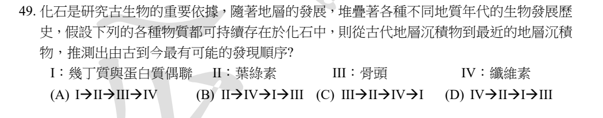
原卷PDF9 · 官方原答案PDF4 · 已核對生物釋疑PDF8下半部–14
官方採計：B 原答案：B
未列於已取得111生物釋疑PDF8下半部–14；依同年度原答案PDF4採計
主分類：Ch25 The History of Life on Earth
25.2 / The Fossil Record
目錄行1557；條目起始印刷頁529；實際目錄 PDF41
次分類：Ch25 The History of Life on Earth
25.3 / The First Single-Celled Organisms
目錄行1570；條目起始印刷頁533；實際目錄 PDF41
次分類：Ch05 The Structure and Function of Large Biological Molecules
5.2 / Polysaccharides
目錄行242；條目起始印刷頁70；實際目錄 PDF36
主分類理由：25.2 The Fossil Record 直接處理地層由古到今推斷生命史；題設可保存物質屬化石證據情境。
次分類理由：25.3 The First Single-Celled Organisms 支援早期光合生物；5.2 Polysaccharides 辨認纖維素與幾丁質結構，不能以化學章取代化石年代主軸。
科學說明：官方B II→IV→I→III。依題目預期，以早期光合生物、含纖維素類群、幾丁質外骨骼類群及具骨脊椎動物作代表推論。這不是四種分子首次起源或最早化石的精確定年：纖維素與幾丁質跨多類群，化石幾丁質亦見於海綿研究，不能把每個分子與單一門類一對一綁定。科學證據支援生命史分類與此推論界線，不冒稱已證明題設四項絕對先後。
來源涵蓋範圍：Campbell支援所列分類框架；具名機制或科學界線由列示原始研究/官方來源補足。
教材正文：印刷529／PDF578、印刷532／PDF581、印刷533／PDF582、印刷534／PDF583、印刷535／PDF584、印刷70／PDF119、印刷71／PDF120、印刷72／PDF121
補充來源：S24
另行比較：按單一代表類群排分子起源是否超過化石證據。
529及532–535生命史與70–72多醣對照；化石海綿幾丁質研究否定一分子僅屬一門類的預設。官方B作考試代表序列，實際四分子最早起源未被證明，分類25.2／25.3與5.2已解決。
結論：證據確認，分類疑義已解決。完整覆核紀錄
Q50 · 29.3 / The Significance of Seedless Vascular Plants 正式分類
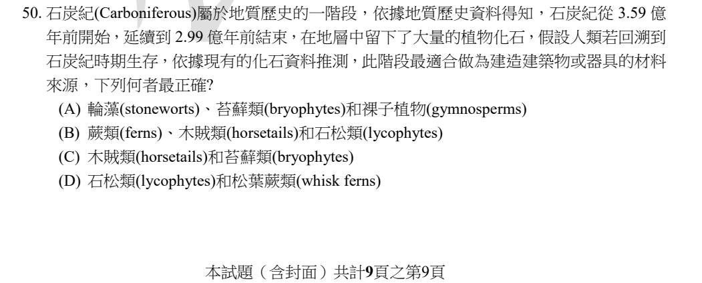
官方採計：B 原答案：B
維持原答案B
主分類：Ch29 Plant Diversity I: How Plants Colonized Land
29.3 / The Significance of Seedless Vascular Plants
目錄行1896；條目起始印刷頁633；實際目錄 PDF43
次分類：Ch29 Plant Diversity I: How Plants Colonized Land
29.3 / Classification of Seedless Vascular Plants
目錄行1893；條目起始印刷頁631；實際目錄 PDF43
主分類理由：29.3 The Significance of Seedless Vascular Plants 直接描述石炭紀大型無種子維管植物森林與煤層，是建材來源的主條目。
次分類理由：29.3 Classification of Seedless Vascular Plants 區分石松與蕨類（含木賊、松葉蕨）及其演化關係。
科學說明：官方B，釋疑PDF14維持。石炭紀樹形石松、木賊類與蕨類相關大型植物是題目的最佳材料組合。釋疑稱被子植物在石炭紀剛出現，與本地12e印刷647早白堊紀約1.4億年前化石證據不同；松葉蕨也非未改變的Rhynia活化石，教材633指出其無根等性狀是次生衍生。Rhynie chert是化石產地／沉積，不是最近物種。保留釋疑原文，不以其錯誤背景改變官方B。
來源涵蓋範圍：Campbell正文支援分類原理；原題與官方釋疑的假設、資料及措辭限制另見科學說明。
教材正文：印刷631／PDF680、印刷632／PDF681、印刷633／PDF682、印刷634／PDF683、印刷641／PDF690、印刷647／PDF696、印刷648／PDF697
補充來源：不需另加課本外具名機制來源
另行比較：石炭紀釋疑的被子植物年代及Rhynie Chert用法是否照單全收。
重看釋疑PDF14與教材631–634、647–648，保留被子植物年代及松葉蕨來源差異；大型無種子維管森林支援B，29.3意義為主、分類為次，不改官方史料。
結論：證據確認，分類疑義已解決。完整覆核紀錄
目前篩選沒有符合的題目；本年度總數仍為50題。
補充來源
查證日期：2026-09-09。使用原始研究摘要及官方資料，不宣稱所有出版商全文已取得。詳細界線見來源紀錄。
- S01 NIDDK：H. pylori檢驗
呼氣測試、胃鏡切片等均有診斷用途；原題A的非侵入優勢與唯一性須區分。
實讀範圍：官方頁面檢驗方法段落的搜尋回傳；未視讀所有圖表。
原始來源1 - S02 B19與Epo誘導紅系MB-02細胞原始研究
MB-02需誘導紅系分化；5–10日支持病毒複製，三日以下未支持。不是憑巨核細胞株來源便能判為血小板母細胞嗜性。
實讀範圍：原始研究摘要及搜尋回傳的誘導條件段；未宣稱取得全部研究影像。
原始來源1 · 原始來源2 - S03 CDC：B型肝炎血清檢驗表
單純疫苗免疫的標準表為HBsAg陰性、anti-HBc陰性、anti-HBs陽性。原題HBcAg欄位與標準表不同，照存原文。
實讀範圍：開頁後定位血清判讀表與疫苗抗體說明。
原始來源1 - S04 CDC：酒精消毒劑及腺病毒感染控制
不同酒精及條件不可混用：70%異丙醇對腺病毒無效；乙醇在所列濃度與條件可有效，原題只說酒精較寬泛。
實讀範圍：官方頁面Alcohol與腺病毒相關段落搜尋回傳；沒有測試使用者乾洗手產品。
原始來源1 · 原始來源2 - S05 C5轉換酶的經典與替代途徑研究
C5轉換需要額外C3b：C4b2a3b與C3b2Bb／C3bBb3b；與C3轉換酶分開。
實讀範圍：1981、2003及2011原始研究摘要／搜尋回傳的複合體段落，非所有方法全文精讀。
原始來源1 · 原始來源2 · 原始來源3 - S06 TFH、B細胞與AID原始研究
TFH是協助B細胞的分化亞群；CD40L、IL-21／IL-4與AID相關反應支援類型轉換及生發中心高突變。
實讀範圍：原始研究摘要、搜尋回傳的導論機制段；不冒稱圖表全讀或外部專家審查。
原始來源1 · 原始來源2 - S07 淋菌Opa黏附及CEACAM互作研究
Opa是附著相關外膜蛋白；與菌毛可共同參與宿主互作，但不能將二者當同一構造。
實讀範圍：原始研究搜尋回傳的附著、Opa與CEACAM結果段。
原始來源1 · 原始來源2 - S08 Yao等2015：披衣菌自身磷脂合成
實驗支持披衣菌以自身脂肪酸及磷脂合成機制建立膜；所需原料及生長環境仍仰賴宿主，不等於自由生活。
實讀範圍：PMC搜尋回傳之摘要、導論與結果／討論相關段已讀；PubMed開頁遇驗證頁，不將該開頁記為全文已取得。
原始來源1 · 原始來源2 - S09 ASM：Catalase Test Protocol及實驗影像解說
觸酶可迅速分辨常見葡萄球菌與鏈球菌；具名S. aureus仍可使用其他性狀，不宣稱凝固酶無鑑別價值。
實讀範圍：ASM官方教學方法與陽／陰性結果文字搜尋回傳，未做培養或實驗。
原始來源1 · 原始來源2 - S10 CDC EID：β-lactamase字源與機制
β-lactamase切開β-lactam環，青黴素及頭孢菌素屬相關抗生素類別；受質範圍視酶而異。
實讀範圍：CDC作者文章的機制定義段搜尋回傳。
原始來源1 - S11 蝴蝶族群監測方法原始研究
穿越線、距離取樣與標記再捕均有估計條件，不能說穿越線完全不能研究豐度或密度。
實讀範圍：2012 Monitoring Butterfly Abundance: Beyond Pollard Walks原始研究搜尋回傳之抽樣方法及限制段。
原始來源1 - S12 ICTV：Hepadnaviridae病毒科報告
HBV以RNA前基因體中間體反轉錄形成DNA，DNA病毒也可需反轉錄酶。
實讀範圍：官方科報告中pgRNA與複製段搜尋回傳。
原始來源1 - S13 CDC：Prion感染控制與SSPE病例報告
SSPE是麻疹病毒相關後果；prion抗一般處理不代表任何專用去污程序皆無效。
實讀範圍：CDC感染控制段與MMWR原始病例報告的病因／背景段；無實際去污驗證。
原始來源1 · 原始來源2 - S14 CDC：狂犬病臨床及Negri小體
吞嚥異常、流涎、腦炎與神經細胞胞質Negri小體支援病原辨識；一般潛伏期非同日發作。
實讀範圍：CDC臨床及病理定義段搜尋回傳，僅用於試題查證。
原始來源1 · 原始來源2 - S15 小鼠腎發育Hox基因表達圖譜
可作Hox於腎發育的具名背景，不足以獨立證實原題人類胚胎中樞神經及腎臟每項HoxB7功能。分類依題設一基因多作用原理。
實讀範圍：小鼠原始研究摘要及出版商搜尋回傳；物種及實驗範圍限定，未使用Hox-7／Msx1論文。
原始來源1 · 原始來源2 - S16 2024：Tiktaalik roseae軸骨研究
四足類近親已呈部分薦部專化，四足類的整套形態診斷不能縮為單一絕對性狀。
實讀範圍：原始研究搜尋回傳之significance及軸骨相關段；PMC直接開頁遇驗證，未宣稱全文圖像精讀。
原始來源1 - S17 Nature Education：遺傳率與表型變異
狹義h²使用累加遺傳變異VA，廣義H²使用總遺傳變異VG，分母均為VP。比例屬族群與環境。
實讀範圍：出版商原著教學頁面之遺傳率公式與定義搜尋回傳。
原始來源1 · 原始來源2 - S18 番茄與水仙有色體轉譯原始研究
番茄成熟有色體可保留特定轉譯；水仙成熟有色體的核糖體狀態不同，不把質體共性變成所有成熟型態的普遍功能。
實讀範圍：2008番茄轉譯組結果及1987水仙成熟有色體摘要／搜尋回傳的核糖體段。
原始來源1 · 原始來源2 - S19 2012 Arabidopsis卡氏帶原始研究
初生卡氏帶可由lignin構成，需與後續suberin lamellae分開；不以單一模式植物推成所有物種材料完全一致。
實讀範圍：原始研究摘要及lignin／suberin相關搜尋回傳。
原始來源1 · 原始來源2 - S20 Zhang與Olsen2009：古菌mRNA加工
Methanocaldococcus jannaschii的123個受測區段中31個有加工證據，足以反駁古菌皆無mRNA加工的絕對敘述。
實讀範圍：原始研究摘要與作者機構研究紀錄的摘要、搜尋回傳結果；PMC／PubMed直接開頁曾遇驗證，不記作全篇實讀。
原始來源1 · 原始來源2 - S21 Melkonian1980：Ulva lactuca配子微細構造
原研究針對U. lactuca稱稍異配，與題目同形配子簡化不同；配子形態與孢子／配子體世代同形是兩件事。
實讀範圍：實際開頁並定位原始摘要；未取得全篇電子顯微圖作重新測量。
原始來源1 - S22 Roeder等2009：Nicotiana suaveolens甲硫胺酸與SAM
指定植物的SAM相關代謝與表達可依器官及日夜改變；不能拿此結果證明全部調節蛋白基因皆恆定。
實讀範圍：實際開頁後讀摘要及Figure3圖說；限該植物及受測指標，非所有真核基因。
原始來源1 - S23 靈長類嗅覺受器基因／偽基因比較研究
不同靈長類嗅覺受器偽基因比例不同，支持基因失活是受器家族演化機制；非定向改作視覺受器。
實讀範圍：2004原始研究摘要及人／黑猩猩完整受器比較的搜尋回傳結果。
原始來源1 · 原始來源2 - S24 2013：寒武紀海綿Vauxia幾丁質原始研究
古老海綿幾丁質證據提醒化石分子不能與單一節肢動物類群綁定；本研究不建立題目四物質精確首次出現順序。
實讀範圍：原始研究標題、摘要及505百萬年幾丁質的搜尋回傳；未自行分析化石或全圖。
原始來源1 - S26 加拿大公衛署：Pseudomonas病原資料表
公衛署性狀段明列Pseudomonas不形成孢子，支援Q3 C的具名排除。
實讀範圍：官方特徵段搜尋回傳；未做菌株實驗。
原始來源1 - S27 Woese與同事：1977古菌及1990 domains原始論文
1977 rRNA系統發生研究提出三個古老支系；1990正式提出domain階層與三域名稱，年份不可壓成同一事件。
實讀範圍：兩篇原始研究摘要及出版日期的搜尋回傳。
原始來源1 · 原始來源2